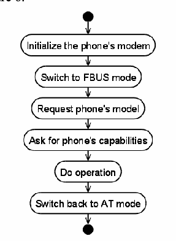
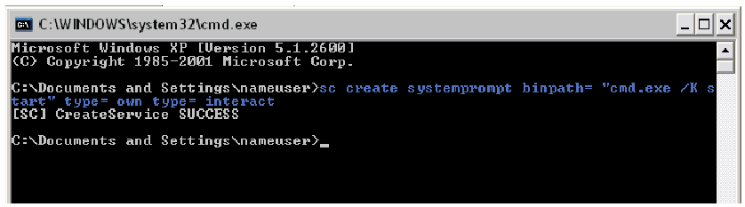

NIST IR 7516 日本語訳
英語タイトル : Forensic Filtering of Cell Phone Protocols日本語タイトル : 携帯電話プロトコルのフォレンジックフィルタリング
公開日 : 2008-08-27
原文URL : https://csrc.nist.gov/pubs/ir/7516/final
原本 PDF : https://doi.org/10.6028/NIST.IR.7516
訳文 : 有志による非公式の日本語訳（AI による翻訳とレビュー）。全 303 段落のうち 256 段落を翻訳済み（原文取得日 : 2026-10-31）
[要約] NIST IR 7516 は、携帯電話の製造者が提供するフォンマネージャーが電話と行うプロトコル交換に、フォレンジックフィルターを適用する方法を述べた報告書です。フォンマネージャーは、フォレンジック用ではないソフトウェアツールであり、適切なフォレンジックツールがない場合に、フォレンジック調査員が携帯電話からデータを復元するために使うことがあります。一方で、フォンマネージャーは電話に対してデータの読み取りと書き込みの両方ができるため、フォレンジックの観点から問題になり、そのリスクを低減する手段としてプロトコルフィルターを提案しています。フィルターの設計、注入、動作について、Nokia のフォンマネージャーと Motorola のフォンマネージャーのそれぞれを取り上げ、付録にフィルターのログの例を示しています。
［NIST のロゴ。公的な標章のため、この非公式サイトには掲載していません。原本 PDF を参照してください。］
NISTIR 7516
NISTIR 7516
Forensic Filtering of Cell Phone Protocols
携帯電話プロトコルのフォレンジックフィルタリング
Aurélien Delaitre
Wayne Jansen
Aurélien Delaitre
Wayne Jansen
NISTIR 7516
NISTIR 7516
Forensic Filtering of Cell Phone Protocols
携帯電話プロトコルのフォレンジックフィルタリング
Aurélien Delaitre
Wayne Jansen
Aurélien Delaitre
Wayne Jansen
COMPUTER SECURITY
コンピューターセキュリティ
Computer Security Division
Information Technology Laboratory
National Institute of Standards and Technology
Gaithersburg, MD 20899-8930
コンピューターセキュリティ部門
情報技術ラボラトリー
米国国立標準技術研究所
Gaithersburg, MD 20899-8930
August 2008
2008 年 8 月
U.S. Department of Commerce
Carlos M. Gutierrez, Secretary
米国商務省
Carlos M. Gutierrez 長官
National Institute of Standards and Technology
James M. Turner, Deputy Director
米国国立標準技術研究所
James M. Turner、副所長
Reports on Computer Systems Technology
コンピューターシステム技術に関する報告書
The Information Technology Laboratory (ITL) at the National Institute of Standards and Technology (NIST) promotes the U.S. economy and public welfare by providing technical leadership for the Nation’s measurement and standards infrastructure. ITL develops tests, test methods, reference data, proof of concept implementations, and technical analysis to advance the development and productive use of information technology. ITL’s responsibilities include the development of technical, physical, administrative, and management standards and guidelines for the cost-effective security and privacy of sensitive unclassified information in Federal computer systems. This Interagency Report discusses ITL’s research, guidance, and outreach efforts in computer security, and its collaborative activities with industry, government, and academic organizations.
米国国立標準技術研究所（NIST）の情報技術ラボラトリー（ITL）は、国の計測・標準基盤に対する技術的なリーダーシップを提供することにより、米国の経済と公共の福祉を促進しています。ITL は、情報技術の発展と生産的な利用を進めるため、試験、試験方法、参照データ、概念実証の実装、技術分析を開発しています。ITL の責務には、連邦コンピューターシステムにおける機微な非機密情報の、費用対効果の高いセキュリティとプライバシーのための、技術的、物理的、管理的、運用管理上の標準およびガイドラインの策定が含まれます。本省庁間報告書は、コンピューターセキュリティにおける ITL の研究、ガイダンス、アウトリーチの取り組みと、産業界、政府、学術機関との共同活動を論じています。
National Institute of Standards and Technology Interagency Report
42 pages (2008)
米国国立標準技術研究所 省庁間報告書
42 ページ（2008 年）
Certain commercial entities, equipment, or materials may be identified in this document in order to describe an experimental procedure or concept adequately. Such identification is not intended to imply recommendation or endorsement by the National Institute of Standards and Technology, nor is it intended to imply that the entities, materials, or equipment are necessarily the best available for the purpose.
本書では、実験の手順や概念を適切に説明するために、特定の営利団体、機器、資材を明示する場合があります。そのような明示は、米国国立標準技術研究所による推奨や保証を意味するものではなく、それらの団体、資材、機器がその目的に利用できる最良のものであると意味するものでもありません。
Abstract
要旨
Phone managers are non-forensic software tools designed to carry out a range of tasks for the user, such as reading and updating the contents of a phone, using one or more of the communications protocols supported by the phone. Phone managers are sometimes used by forensic investigators to recover data from a cell phone when no suitable forensic tool is available. While precautions can be taken to preserve the integrity of data on a cell phone, inherent risks exist. Applying a forensic filter to phone manager protocol exchanges with a device is proposed as a means to reduce risk.
フォンマネージャーは、フォレンジック用ではないソフトウェアツールで、携帯電話がサポートする 1 つ以上の通信プロトコルを使って、携帯電話の内容の読み取りや更新など、ユーザーのためのさまざまな作業を実行するよう設計されています。フォンマネージャーは、適切なフォレンジックツールがない場合に、携帯電話からデータを復元するために、フォレンジック調査員が使用することがあります。携帯電話上のデータの完全性を保全するための予防措置はとれますが、固有のリスクが存在します。リスクを低減する手段として、デバイスとのフォンマネージャーのプロトコル交換にフォレンジックフィルターを適用することを提案します。
Keywords: Cell Phone, Computer Forensics, Protocol Filter
キーワード: 携帯電話、コンピューターフォレンジック、プロトコルフィルター
Table of Contents
目次
Table of Figures
図の目次
Figure 1: Forensic Tool Timeline — 1
図 1: フォレンジックツールのタイムライン — 1
Figure 2: API Interception — 5
図 2: API の傍受 — 5
Figure 3: Phone Manager Protocol Stack — 6
図 3: フォンマネージャーのプロトコルスタック — 6
Figure 4: FBUS Frame — 7
図 4: FBUS フレーム — 7
Figure 5: Nokia PC Suite Design — 10
図 5: Nokia PC Suite の設計 — 10
Figure 6: Basic Operational Sequence — 10
図 6: 基本的な動作の順序 — 10
Figure 7: Filter Loaded into Nokia PC Suite — 11
図 7: Nokia PC Suite に読み込まれたフィルター — 11
Figure 8: Creation of a Service with System Privileges — 12
図 8: システム権限を持つサービスの作成 — 12
Figure 9: Starting the Service with System Privileges — 12
図 9: システム権限を持つサービスの開始 — 12
Figure 10: Loading the Filter into Nokia PC Suite — 13
図 10: Nokia PC Suite へのフィルターの読み込み — 13
Figure 11: Sequence of Operation for NPS Filtering — 14
図 11: NPS フィルタリングの動作の順序 — 14
Figure 12: Motorola Phone Tools Design — 17
図 12: Motorola Phone Tools の設計 — 17
Figure 13: Filter Loaded into mPhoneTools.exe — 18
図 13: mPhoneTools.exe に読み込まれたフィルター — 18
Figure 14: Injection of the Filter — 19
図 14: フィルターの注入 — 19
Figure 15: Sequence of Operation for mPhoneTools.exe Filtering — 20
図 15: mPhoneTools.exe フィルタリングの動作の順序 — 20
Figure 16: Sequence of Operation for MMCenter.exe Filtering — 21
図 16: MMCenter.exe フィルタリングの動作の順序 — 21
1. Introduction
1. はじめに
Over 2.5 billion cell phones are estimated in use in the world today and the number continues to grow. Digital evidence recovered from a cell phone can provide a wealth of information about the user, and technical advances in device capabilities generally offer opportunity for recovery of a broader range of information. Numerous forensic tools abound for automatic data recovery from cell phones. While the outlook should be positive, a number of factors have coalesced to impede progress in cell phone forensics. A key issue is the delay between the availability of a cell phone to the public and support for the phone by a forensic tool.
現在、世界で使用されている携帯電話は 25 億台を超えると推定されており、その数は増え続けています。携帯電話から復元したデジタル証拠は、ユーザーに関する豊富な情報を提供でき、デバイスの能力の技術的進歩は、一般に、より広範な情報を復元する機会をもたらします。携帯電話からの自動的なデータ復元のためのフォレンジックツールは、数多く存在します。見通しは明るいはずですが、いくつかの要因が重なって、携帯電話フォレンジックの進展を妨げています。重要な問題は、携帯電話が一般向けに入手可能になってから、フォレンジックツールがその電話をサポートするまでの遅れです。
When a new phone appears, a forensic tool manufacturer must decide whether to adapt its tool for the phone, purchase exemplars for study, create and test an update containing support for the phone, and finally release the tool update to the user. The decision factors involved include the popularity of the phone model, the requirements of the customer base, and the overall support objectives of the company. The time required for needed tool updates to reach users, therefore, can be lengthy and for the least popular models may never occur. Validation of the updated tool for use in casework increases the delay, putting forensic specialists further behind the power curve of having a suitable means for automated data recovery. Figure 1 illustrates the situation.
新しい電話が登場すると、フォレンジックツールの製造者は、その電話に合わせてツールを適応させるか、研究のために実機を購入するか、その電話のサポートを含む更新版を作成して試験するか、そして最終的にツールの更新版をユーザーにリリースするかを決定しなければなりません。決定にかかわる要因には、電話機種の人気、顧客層の要求、会社全体のサポート目標があります。したがって、必要なツールの更新がユーザーに届くまでには長い時間がかかる場合があり、最も人気のない機種では、実現しないこともあります。更新したツールを事件の捜査で使用するための妥当性確認が、遅れをさらに増やし、フォレンジックの専門家が、自動的なデータ復元のための適切な手段を持つという点で、さらに後れをとることになります。図 1 はこの状況を示しています。

Figure 1: Forensic Tool Timeline
図 1: フォレンジックツールのタイムライン
Phone managers are sometimes turned to as a way to recover data when no suitable forensic tool is available. Phone managers are typically available from the manufacturer of the cell phone and kept up to date with support for newly released models. They allow various operations, including retrieval of core user data such as phonebook entries and photos. The forensic soundness of tools not designed specifically for forensic purposes are questionable, however [4]. In particular, phone managers have the ability to both read and write data to a phone, which is problematic from a forensic perspective, if used without applying proper testing and procedural controls. Many anecdotes exist of a practitioner accidentally or unknowingly writing data to a phone when using such a tool.
適切なフォレンジックツールがない場合に、データを復元する方法として、フォンマネージャーが利用されることがあります。フォンマネージャーは、通常、携帯電話の製造者から入手でき、新たに発売された機種のサポートを加えて最新の状態に保たれています。電話帳のエントリや写真などの中核的なユーザーデータの取得を含む、さまざまな操作ができます。しかし、フォレンジック目的のために特に設計されていないツールのフォレンジック的な健全性には、疑問があります [4]。特に、フォンマネージャーは電話に対してデータの読み取りと書き込みの両方ができ、適切な試験と手順上の管理策を適用せずに使用すると、フォレンジックの観点から問題になります。実務者が、このようなツールを使用する際に、誤って、または気づかずに電話にデータを書き込んでしまったという逸話は数多くあります。
To simplify the content recovery process, a forensically-sound access method would exist across all cell phones. More realistically, cell phones would support a common interface and protocol standard for handset communications that could be used for data recovery. A recently proposed standard from the Open Mobile Terminal Platform (OMTP) specifies the use of micro USB (Universal Serial Bus) as a universal, cross-manufacturer cable interface for power and communications. Its data synchronization capabilities might eventually provide an opportunity for a more consistent means of content recovery, if adopted by manufacturers.
内容の復元プロセスを単純にするには、フォレンジック的に健全なアクセス方法が、すべての携帯電話に存在することになるでしょう。より現実的には、携帯電話が、データ復元に使用できる、ハンドセットの通信のための共通のインターフェースとプロトコルの標準をサポートすることになるでしょう。Open Mobile Terminal Platform（OMTP）が最近提案した標準は、電力と通信のための、製造者をまたぐ汎用のケーブルインターフェースとして、マイクロ USB（Universal Serial Bus）の使用を規定しています。そのデータ同期機能は、製造者に採用されれば、いずれ、より一貫した内容復元の手段となる機会を提供するかもしれません。
Until then, avenues to reduce latency need to be pursued. For example, tool manufacturers could improve their relationships with phone manufacturers or network carriers to gain a head start on development before phones are available to the general public. Another approach to reduce latency, called phone manager protocol filtering, is described in this paper. The idea is to build on the functionality of available phone managers by augmenting them with a protocol filter that limits their functionality to allow only safe exchanges to occur.
それまでは、遅延を減らす方策を追求する必要があります。たとえば、ツールの製造者は、携帯電話の製造者や通信事業者との関係を改善して、電話が一般向けに入手可能になる前に、開発で先行できるようにすることが考えられます。遅延を減らすもう 1 つの方法は、フォンマネージャープロトコルフィルタリングと呼ばれ、本書で説明します。その考え方は、利用可能なフォンマネージャーの機能を土台とし、そこにプロトコルフィルターを追加して、機能を安全な交換だけが行えるように制限するというものです。
2. Background
2. 背景
More than a billion cell phones were sold worldwide in 2007 and projections beyond continue to rise. Over the last decade the capabilities and features of cell phones, such as increases in performance and storage capacity, and additions of document and multimedia handling functionality, have also continued to improve rapidly, turning cell phones into data reservoirs with the capability to hold a broad range of personal and organizational information.
2007 年には世界で 10 億台を超える携帯電話が販売され、その先も予測は増加し続けています。過去 10 年間に、性能や記憶容量の向上、文書やマルチメディアを扱う機能の追加といった、携帯電話の能力と機能も急速に向上し続け、携帯電話は、個人や組織の幅広い情報を保持できる、データの貯蔵庫となりました。
Forensic software tools are the preferred means for recovering digital evidence from supported cell phones. Data recovery is usually carried out through logical instead of physical acquisition, using one or more protocols supported by the device. The protocols include standardized and proprietary device synchronization protocols, command interface protocols, and diagnostic protocols.
フォレンジックソフトウェアツールは、対応する携帯電話からデジタル証拠を復元する方法として、好ましいものです。データの復元は、通常、デバイスがサポートする 1 つ以上のプロトコルを使って、物理取得ではなく論理取得により行われます。このプロトコルには、標準化されたデバイス同期プロトコルや独自仕様のデバイス同期プロトコル、コマンドインターフェースプロトコル、診断プロトコルがあります。
The number and variety of phone models unveiled on the world market each year is considerable, creating a burden for forensic tool manufacturers to keep their product coverage up to date. Models introduced into one national market can be used elsewhere by replacing the identity module of a phone (e.g., a Groupe Spécial Mobile (GSM) subscriber identity module) with one from another carrier, or through roaming features. Models of older functioning phones, though out of date, can also remain in use for years after their initial release.
毎年世界市場に発表される電話の機種の数と種類は膨大で、フォレンジックツールの製造者には、製品の対応範囲を最新に保つ負担が生じています。ある国の市場に投入された機種は、電話の識別モジュール（たとえば、Groupe Spécial Mobile（GSM）加入者識別モジュール）を別の通信事業者のものに交換することで、またはローミング機能を通じて、他の場所でも使用できます。古い機種の電話は、時代遅れになっても、最初の発売後何年も使われ続けることがあります。
Unlike the situation with personal computers, mobile phone manufacturers often employ different proprietary operating systems and storage structures. New phone models often have functional differences from previous models that must be taken into account to recover and report data properly. Complicating matters further are variations in data storage location assignments, which can occur in a specific model of phone subsidized and supplied by different network carriers, due to adaptations made for the carriers by the manufacturer. Firmware updates sent out by a network carrier can also affect data locations, creating additional hurdles for developing and maintaining a tool [3].
パーソナルコンピューターの場合とは異なり、携帯電話の製造者は、異なる独自仕様のオペレーティングシステムと記憶構造を使用することがよくあります。新しい電話の機種には、データを適切に復元して報告するために考慮しなければならない、以前の機種との機能上の違いがあることがよくあります。さらに事態を複雑にするのは、データ保存場所の割り当ての違いです。これは、通信事業者が補助して供給する、特定の電話機種に、製造者が通信事業者向けに行った改変によって生じることがあります。通信事業者が配信するファームウェアの更新も、データの場所に影響を与える可能性があり、ツールの開発と保守にさらなる障害をもたらします [3]。
Six manufacturers control about 80% of the cell phone market at any one time, while approximately forty others compete for the remaining 20% share. Nokia and Motorola led the group in 2006 with more than 50%; in 2007 Nokia and Samsung were in front with more than 50% [1, 2, 10]. New manufacturers occasionally enter the marketplace and others leave. For example, the iPhone from Apple was a new entrant in 2007.
いつの時点でも、約 80% の携帯電話市場を 6 社の製造者が占め、残りの 20% のシェアをおよそ 40 社が争っています。2006 年は、Nokia と Motorola が 50% を超えて首位でした。2007 年は、Nokia と Samsung が 50% を超えて先頭に立っていました [1, 2, 10]。新しい製造者が時折市場に参入し、他の製造者は撤退します。たとえば、Apple の iPhone は 2007 年の新規参入でした。
Cell phone manufacturers such as Nokia, Motorola, and Samsung normally keep their phone manager software up to date for new and current phone models in the product line. Forensic specialists have long recognized the potential for phone managers as a tool for automated recovery of common types of core user data. Because phone managers are not forensically sound, additional steps must be followed to use them to recover data. They include validating the operation of the phone manager, testing and verifying the procedures to be followed for acquisition to safeguard against altering data on the phone, and producing a cryptographic hash of acquired data objects.
Nokia、Motorola、Samsung などの携帯電話の製造者は、通常、製品ラインの新しい電話機種と現行の電話機種に対応して、フォンマネージャーソフトウェアを最新の状態に保っています。フォレンジックの専門家は、フォンマネージャーが、一般的な種類の中核的なユーザーデータを自動的に復元するツールとなる可能性を、以前から認識していました。フォンマネージャーはフォレンジック的に健全ではないため、データの復元にこれを使用するには、追加の手順に従わなければなりません。これには、フォンマネージャーの動作の妥当性確認、電話上のデータの変更を防ぐために取得時に従う手順の試験と検証、取得したデータオブジェクトの暗号ハッシュの作成が含まれます。
Regrettably, even an experienced forensic specialist taking all available precautions could accidentally write data to a phone using a phone manager. Phone manager protocol filtering helps to safeguard against accidental modifications to data on the phone and provides a stopgap measure until a forensic tool update that supports the phone in question becomes available. ]
残念ながら、経験豊富なフォレンジックの専門家が利用可能なあらゆる予防措置をとっても、フォンマネージャーを使って誤って電話にデータを書き込んでしまうことがあります。フォンマネージャープロトコルフィルタリングは、電話上のデータが誤って変更されるのを防ぐのに役立ち、該当する電話をサポートするフォレンジックツールの更新版が利用可能になるまでのつなぎの措置となります。
3. Filtering Considerations
3. フィルタリングの考慮事項
Forensic cell phone tools often recover data employing the same protocols used by phone managers. To avoid the problem of altering data on a phone, forensic tools restrict the protocol used to communicate with the device to only functions that are either known to be safe or involve very minor forensic issues. A potential way to gain the same advantage for phone managers is to apply a filter between the phone manager application and the device being managed that blocks harmful protocol commands from propagating. Filtering is an often used technique in computer forensics, commonly implemented in hardware or software write blockers for disk and USB device interfaces.
携帯電話のフォレンジックツールは、フォンマネージャーが使用するのと同じプロトコルを使ってデータを復元することがよくあります。電話上のデータが変更される問題を避けるため、フォレンジックツールは、デバイスとの通信に使用するプロトコルを、安全であると分かっているか、フォレンジック上の問題がごく小さい機能だけに制限します。フォンマネージャーでも同じ利点を得るための方法として考えられるのは、フォンマネージャーアプリケーションと管理対象のデバイスの間にフィルターを適用し、有害なプロトコルコマンドが伝わらないようにブロックすることです。フィルタリングは、コンピューターフォレンジックで頻繁に使用される手法であり、ディスクや USB デバイスのインターフェース用のハードウェアまたはソフトウェアのライトブロッカーとして、一般に実装されています。
Most phone managers run under the Windows operating system and are distributed in binary form for installation. Communications with cell phones occur over a serial COM or USB port. Most serial port data transmission for Windows systems is done the same way as writing to a file. For example, the WriteFile function can be used to send data via a serial COM port. The same function also works with virtual serial ports established over USB, infrared, or Bluetooth communications. The technique used for the filter prototype involves intercepting the call from the phone manager to the Application Programming Interface (API) for this function to capture the data, interpret the content, and return an appropriate response to the phone manager. Similarly, calls to other related functions, such as CreateFile and ReadFile, would need to be intercepted for the filter to work overall.
ほとんどのフォンマネージャーは Windows オペレーティングシステム上で動作し、インストール用のバイナリ形式で配布されています。携帯電話との通信は、シリアル COM ポートまたは USB ポートを介して行われます。Windows システムでのシリアルポートのデータ送信の大半は、ファイルへの書き込みと同じ方法で行われます。たとえば、WriteFile 関数を使って、シリアル COM ポート経由でデータを送信できます。同じ関数は、USB、赤外線、Bluetooth 通信で確立された仮想シリアルポートでも機能します。フィルターのプロトタイプに使用した手法は、フォンマネージャーからこの関数のアプリケーションプログラミングインターフェース（API）への呼び出しを傍受して、データを捕捉し、内容を解釈し、フォンマネージャーに適切な応答を返すものです。同様に、フィルターが全体として機能するには、CreateFile や ReadFile など、関連する他の関数への呼び出しも傍受する必要があります。
API hooking is a term used to describe intercepting calls to a function for some purpose, usually to customize and extend its functionality and also to monitor aspects of an application. The target function may be in an executable application, a library, or a system Dynamic Link Library (DLL). In the case of Windows operating systems, the functions of interest are part of the so-called Win32 API. Hooking Win32 APIs is not new; security add-ons, such as personal firewalls and anti-virus applications, as well as malicious code, such as rootkits, have used these techniques to insert themselves seamlessly into an operating system. The interception process is performed at run time against a running process rather than modifying static binary images at rest.
API フックとは、ある目的のために、通常は機能をカスタマイズして拡張し、またアプリケーションの側面を監視するために、関数への呼び出しを傍受することを説明する用語です。対象の関数は、実行可能なアプリケーション、ライブラリ、システムの Dynamic Link Library（DLL）のいずれにもあり得ます。Windows オペレーティングシステムの場合、対象となる関数は、いわゆる Win32 API の一部です。Win32 API のフックは新しいものではありません。パーソナルファイアウォールやウイルス対策アプリケーションなどのセキュリティ用アドオンや、ルートキットなどの悪意のあるコードが、オペレーティングシステムに自らを違和感なく組み込むために、これらの手法を使用してきました。傍受のプロセスは、保存されている静的なバイナリイメージを変更するのではなく、実行中のプロセスに対して実行時に行われます。
Several different techniques have been used to hook Windows APIs. A common way is to alter the Import Address Table (IAT) of a given module and replace the target function with the substitute function. The IAT contains the address of each imported function and is used by the loader to map function calls to entry points of loaded routines. Alternatively, an unconditional jump can be inserted in the first few bytes of a target function to change the flow of execution to the substitute function. When the substitute function completes its task, control is returned to the modified function or, optionally, back to the calling program.
Windows API のフックには、いくつかの異なる手法が使用されてきました。一般的な方法は、あるモジュールの Import Address Table（IAT）を書き換え、対象の関数を代替の関数に置き換えることです。IAT には、インポートされた各関数のアドレスが含まれており、ローダーが関数呼び出しを、読み込まれたルーチンのエントリポイントに対応付けるために使用します。別の方法として、対象の関数の最初の数バイトに無条件ジャンプを挿入して、実行の流れを代替の関数に変更することもできます。代替の関数が処理を終えると、制御は、変更された関数に戻されるか、場合によっては呼び出し元のプログラムに戻されます。
![Diagram of API interception with four boxes: "Calling Program", "Filter Function" (dotted outline), "Trampoline Function" (dotted outline) and "Target Function". The original call path from "Calling Program" to "Target Function" is redirected. Numbered arrows show the new flow: 1, from the start of "Target Function" to "Filter Function"; 2, from "Filter Function" to "Trampoline Function"; 3, from "Trampoline Function" to "Target Function"; 4, from "Target Function" back to "Filter Function"; 5, from "Filter Function" back to "Calling Program". The direct return path from "Target Function" to "Calling Program" is marked with an X.](assets/ir-7516/p0011-figure-01.png)
Figure 2: API Interception
図 2: API の傍受
The approach used for the phone manager filter is to have the substitute function serve as a wrapper for the target function, as illustrated in Figure 2. The first few instructions of the target function are replaced with a jump to the filter function, and the replaced instructions from the target function are preserved in a so-called trampoline function [6]. The trampoline function acts like a relay, ending with a jump back to the target function to complete processing after the preserved instructions are executed. The filter function can either call the trampoline function to invoke the target function, or return directly to the calling program and bypass the target function altogether. The target function is also adjusted to return control to the filter function upon completion to allow the filter to perform any needed post function operations.
フォンマネージャーのフィルターに使用する手法は、図 2 に示すとおり、代替の関数を対象の関数のラッパーとして機能させるものです。対象の関数の最初の数個の命令は、フィルター関数へのジャンプに置き換えられ、対象の関数から置き換えられた命令は、いわゆるトランポリン関数に保存されます [6]。トランポリン関数は中継のように動作し、保存された命令が実行された後、処理を完了するために対象の関数に戻るジャンプで終わります。フィルター関数は、トランポリン関数を呼び出して対象の関数を起動することも、対象の関数を完全に迂回して直接、呼び出し元のプログラムに戻ることもできます。対象の関数は、フィルターが必要な関数後の処理を行えるよう、完了時に制御をフィルター関数に戻すようにも調整されます。
The use of this technique makes the filter somewhat system-dependant. Certain functions of the Win32 API are partially overwritten. The binary code of the Win32 API can also vary with the version of the operating system. The operation also must observe the right alignment with the next, not overwritten instruction. It is typically a simple task to adapt the filter to a particular release of Windows, including the version of its service pack.
この手法を使うと、フィルターは多少システム依存になります。Win32 API の特定の関数が部分的に上書きされます。Win32 API のバイナリコードも、オペレーティングシステムのバージョンによって異なる場合があります。また、この操作では、上書きされない次の命令との正しいアラインメントを守らなければなりません。サービスパックのバージョンを含め、Windows の特定のリリースにフィルターを合わせることは、通常は簡単な作業です。
4. Phone Manager Protocol Considerations
4. フォンマネージャープロトコルの考慮事項
The protocols used by a phone manager to manipulate the content of a cell phone can differ between manufacturers. Both wired and wireless means of communications may be supported. A number of protocols have been standardized for this purpose, including the AT Command set, Synchronization Markup Language (SyncML), Object Exchange Protocol (OBEX), and Infrared Data Association (IrDA) standards. In practice, a mix of standardized and proprietary protocols may be involved. The protocols used by two different phone managers to communicate with supported handsets over a serial cable are discussed in the remainder of this section. The examples illustrate some of the factors involved when filtering such protocols.
フォンマネージャーが携帯電話の内容を操作するために使用するプロトコルは、製造者によって異なる場合があります。有線と無線のどちらの通信手段もサポートされることがあります。この目的のために、AT Command セット、Synchronization Markup Language（SyncML）、Object Exchange Protocol（OBEX）、Infrared Data Association（IrDA）の標準など、いくつかのプロトコルが標準化されています。実際には、標準化されたプロトコルと独自仕様のプロトコルが混在して使われることがあります。本節の残りでは、2 つの異なるフォンマネージャーが、対応するハンドセットとシリアルケーブルで通信するために使用するプロトコルを論じます。これらの例は、このようなプロトコルをフィルタリングする際に関係する要因のいくつかを示しています。
4.1 Nokia PC Suite
4.1 Nokia PC Suite
The Nokia PC Suite (PCS) provides a good example of a candidate phone manager for protocol filtering. The current version for the U.S. market supports approximately 75 models, including the very latest. The versions for other countries support about the same number of models, some of which are different from the models in the U.S. version. PC Suite can be used for a number of things, including copying personal data (e.g., phonebook entries) to a computer for safekeeping; transferring images, video clips, and other files from the phone to a computer; and viewing contacts and messages on a device. Certain features work only when used with those models of Nokia phones that employ compatible functionality. Various types of communications with the phone are supported, including serial COM and USB cables. Wireless options also exist.
Nokia PC Suite（PCS）は、プロトコルフィルタリングの対象となるフォンマネージャーの好例です。米国市場向けの現行バージョンは、最新のものを含め、約 75 機種をサポートしています。他の国向けのバージョンも、ほぼ同数の機種をサポートしており、その一部は米国版の機種とは異なります。PC Suite は、個人データ（たとえば電話帳のエントリ）を安全のためにコンピューターにコピーする、画像、ビデオクリップ、その他のファイルを電話からコンピューターに転送する、デバイス上の連絡先やメッセージを閲覧するなど、さまざまな目的に使用できます。特定の機能は、互換性のある機能を備えた Nokia 電話の機種で使用した場合にのみ動作します。シリアル COM ケーブルや USB ケーブルなど、電話とのさまざまな種類の通信がサポートされています。無線のオプションもあります。
The Nokia PCS uses a proprietary protocol called the FBUS protocol to perform its functions. An AT modem command is sent to the phone to switch into FBUS mode. The FBUS protocol is used to extract the model number of the phone, presumably to determine how to proceed. The FBUS protocol can also be used to recover other information, such as the phonebook, call logs, SMS messages, and calendar entries. Another protocol, OBEX, which rides over the FBUS frames, is also used to extract media files, ring tones, and downloaded applications that are present. The physical interface is a bidirectional serial communication bus that runs at 115,200 bps [7]. Figure 3 illustrates the situation.
Nokia PCS は、機能を実行するために、FBUS プロトコルと呼ばれる独自仕様のプロトコルを使用します。電話を FBUS モードに切り替えるため、AT モデムコマンドが電話に送られます。FBUS プロトコルは、おそらく処理の進め方を判断するために、電話の機種番号を取り出すのに使用されます。FBUS プロトコルは、電話帳、通話履歴、SMS メッセージ、カレンダーのエントリなど、他の情報の復元にも使用できます。FBUS フレームの上で動作する別のプロトコルである OBEX も、存在するメディアファイル、着信音、ダウンロードしたアプリケーションを取り出すために使用されます。物理インターフェースは、115,200 bps で動作する双方向のシリアル通信バスです [7]。図 3 はこの状況を示しています。

Figure 3: Phone Manager Protocol Stack
図 3: フォンマネージャーのプロトコルスタック
The FBUS frame is byte oriented. The first byte of the frame, byte 0, holds the hexadecimal value of the identifier for the FBUS protocol. The value 1E is the frame identifier for cable. Bytes 1 and 2 respectively contain the destination and source addresses [7, 8]. For data sent to the phone, the destination address is 00. The source address for the personal computer is 10 or 0C. Byte 3 contains the command identifier, which potentially supports up to 256 (i.e., 28) commands. Bytes 4 and 5 hold the length of the data that follows. The bytes following byte 5 convey the data segment of the frame. The last byte of the data segment contains a 3-bit sequence number and fragment flag, while the penultimate byte indicates the remaining frames to go to complete the payload. The last two bytes of the frame contain a checksum [7, 8]. Only frames of an even length are transmitted. A byte of all zeros is inserted before the checksum, if needed, to make the total length of the frame even. Figure 4 illustrates the frame composition.
FBUS フレームはバイト指向です。フレームの最初のバイトであるバイト 0 には、FBUS プロトコルの識別子の 16 進値が入ります。値 1E は、ケーブル用のフレーム識別子です。バイト 1 と 2 には、それぞれ宛先アドレスと送信元アドレスが入ります [7, 8]。電話に送信されるデータでは、宛先アドレスは 00 です。パーソナルコンピューターの送信元アドレスは 10 または 0C です。バイト 3 にはコマンド識別子が入り、最大 256 個（すなわち 28 個）のコマンドをサポートできる可能性があります。バイト 4 と 5 には、後続のデータの長さが入ります。バイト 5 に続くバイトは、フレームのデータセグメントを運びます。データセグメントの最後のバイトには、3 ビットのシーケンス番号とフラグメントフラグが入り、最後から 2 番目のバイトは、ペイロードを完了するために残っているフレームを示します。フレームの最後の 2 バイトにはチェックサムが入ります [7, 8]。長さが偶数のフレームだけが送信されます。必要であれば、フレームの全長を偶数にするため、チェックサムの前にすべてゼロのバイトが挿入されます。図 4 は、フレームの構成を示しています。
| Byte | 0 | 1 | 2 | 3 | 4 - 5 | 6 - n | n+1 - n+2 |
|---|---|---|---|---|---|---|---|
| Contents | Frame ID | Destination | Source | Command | Length | Data | Checksum |
| バイト | 0 | 1 | 2 | 3 | 4 - 5 | 6 - n | n+1 - n+2 |
|---|---|---|---|---|---|---|---|
| 内容 | フレーム ID | 宛先 | 送信元 | コマンド | 長さ | データ | チェックサム |
Figure 4: FBUS Frame
図 4: FBUS フレーム
The FBUS protocol is an acknowledged request-response protocol, with the phone manager issuing command requests and the phone answering [7, 8]. Responses use the same command identifier as the request being answered, but reverse the source and destination address. Every request or response, except for the first request, is prepended with an acknowledgment frame indicating receipt of the last protocol element sent by the other party. This convention means that for a blocked request, the filter may need to forge a receipt acknowledgment, in addition to an appropriate negative response, to prevent the phone manager from resending a disallowed frame.
FBUS プロトコルは、確認応答付きの要求・応答型のプロトコルで、フォンマネージャーがコマンド要求を発行し、電話が応答します [7, 8]。応答は、応答する対象の要求と同じコマンド識別子を使いますが、送信元アドレスと宛先アドレスを入れ替えます。最初の要求を除くすべての要求または応答の前には、相手が送った直前のプロトコル要素を受信したことを示す確認応答フレームが付けられます。この決まりにより、ブロックされた要求については、フォンマネージャーが許可されていないフレームを再送するのを防ぐため、フィルターは、適切な否定応答に加えて、受信の確認応答を偽造する必要がある場合があります。
Because the FBUS protocol is proprietary, the function of all command identifiers is not known. However, over the years many of the commands have been determined through experimentation by various parties. Furthermore, the communications of forensic tools, such as the ones mentioned above, can be monitored to identify commands considered safe by tool manufacturers. To avoid propagating frames containing unsafe commands to a phone, the phone manager filter incorporates a white list of known commands considered safe; all other command frames are blocked.
FBUS プロトコルは独自仕様であるため、すべてのコマンド識別子の機能が分かっているわけではありません。ただし、長年にわたり、さまざまな関係者による実験を通じて、コマンドの多くが判明しています。さらに、上記のようなフォレンジックツールの通信を監視することで、ツールの製造者が安全とみなすコマンドを識別できます。安全でないコマンドを含むフレームが電話に伝わらないようにするため、フォンマネージャーのフィルターは、安全とみなされる既知のコマンドのホワイトリストを備えており、他のコマンドのフレームはすべてブロックされます。
OBEX performs a function similar to HTTP for devices that are resource constrained. OBEX consists of the following pieces:
OBEX は、リソースに制約のあるデバイス向けに、HTTP に似た機能を果たします。OBEX は、次の要素で構成されています。
•An object model that conveys information about the objects being sent, as well as the objects themselves
•送信されるオブジェクト自体に加え、そのオブジェクトに関する情報を運ぶオブジェクトモデル
•A session protocol, which uses a binary packet-based client/server request-response model
•バイナリのパケットベースのクライアント/サーバーの要求・応答モデルを使用するセッションプロトコル
The OBEX File Transfer Protocol (OBEXFTP) service is used to access the file structure of the device. The OBEX Object Push (OBEXOBJECTPUSH) service is used to exchange objects such as VCard and VCalendar and, for some devices, to access to the file structure. In addition, other proprietary methods can be defined by the manufacturer.
OBEX File Transfer Protocol（OBEXFTP）サービスは、デバイスのファイル構造にアクセスするために使用されます。OBEX Object Push（OBEXOBJECTPUSH）サービスは、VCard や VCalendar などのオブジェクトを交換するために、また一部のデバイスでは、ファイル構造にアクセスするために使用されます。さらに、製造者は他の独自仕様の方式を定義できます。
4.2 Motorola Phone Tools
4.2 Motorola Phone Tools
Motorola is another major actor in the cellular phone industry. The company provides a software solution, called Motorola Phone Tools (MPT), which supports about 300 phone models. MPT offers another example of a candidate phone manager for protocol filtering.
Motorola は、携帯電話業界におけるもう 1 つの主要な企業です。同社は、約 300 機種の電話をサポートする、Motorola Phone Tools（MPT）というソフトウェアソリューションを提供しています。MPT は、プロトコルフィルタリングの対象となるフォンマネージャーのもう 1 つの例です。
Depending on the phone and its capabilities, MPT allows the management and synchronization of phonebook and calendar data as well as transferring copies of image, audio, video, and other files to and from the phone. MPT also provides some connectivity features, like sending SMS and MMS messages and also using the phone as a modem to connect to the Internet.
電話とその能力によっては、MPT により、電話帳とカレンダーのデータの管理と同期、また画像、音声、動画、その他のファイルの電話との間でのコピーの転送ができます。MPT は、SMS や MMS メッセージの送信や、電話をモデムとして使ったインターネットへの接続など、一部の接続機能も提供します。
MPT can connect to a phone via cable, Bluetooth, or infrared. Motorola phones and software communicate initially by means of the AT protocol. For some operations, such as copying media files, the OBEX protocol is used instead. A specific AT command is used to switch to OBEX. The OBEX session is then established. When the session is ended through an OBEX disconnect command, the phone and software switch back to AT.
MPT は、ケーブル、Bluetooth、赤外線で電話に接続できます。Motorola の電話とソフトウェアは、最初は AT プロトコルで通信します。メディアファイルのコピーなど、一部の操作では、代わりに OBEX プロトコルが使用されます。OBEX への切り替えには、特定の AT コマンドが使用されます。その後、OBEX セッションが確立されます。OBEX の切断コマンドでセッションが終了すると、電話とソフトウェアは AT に戻ります。
The AT command set is based on the original Hayes modem commands. The original command set has been expanded and standardized for use with cell phones to allow core data to be stored or retrieved as well as other actions (e.g., [13]). The extended commands are strings of text that generally follow the format “AT” (i.e., the attention code), followed by a command mnemonic prefixed with a plus sign, ending with any required parameters prefixed with an equal sign and separated by commas (e.g., AT+cmd=para1, para2). A response is expected for each request issued. Commands can be issued together as a string of commands using a semicolon as a separator. The standard also allows for the definition of manufacturer-specific extensions.
AT コマンドセットは、もとの Hayes モデムのコマンドに基づいています。もとのコマンドセットは、携帯電話で使用するために拡張され標準化されており、中核的なデータの保存や取得などの動作を可能にしています（たとえば [13]）。拡張コマンドは、テキストの文字列で、一般に「AT」（すなわちアテンションコード）の形式に従い、その後にプラス記号を前置したコマンドのニーモニックが続き、必要なパラメーターが、等号を前置してカンマで区切られて最後に付きます（たとえば AT+cmd=para1, para2）。発行された各要求に対して、応答が期待されます。コマンドは、区切り文字にセミコロンを使って、コマンドの文字列としてまとめて発行できます。この標準は、製造者固有の拡張の定義も許容しています。
5. Nokia Phone Manager Filtering
5. Nokia フォンマネージャーのフィルタリング
As of release 6.84.10.3, Nokia PCS is made of several standalone programs. The Graphical User Interface (GUI), LaunchApplication.exe, allows the user to start the other operational sub-programs such as PCSync2.exe and ContactsEditor.exe, used respectively to synchronize data with a computer and to edit phonebook entries. These programs establish communication over a Remote Procedure Call (RPC) channel with the resident service of PCS, called ServiceLayer.exe. This service is started automatically by the operating system and is responsible for communicating with the phone. It makes use of the different protocols supported by Nokia phones (i.e., AT, FBUS, and OBEX over FBUS).
リリース 6.84.10.3 の時点で、Nokia PCS は複数の独立したプログラムで構成されています。グラフィカルユーザーインターフェース（GUI）の LaunchApplication.exe により、ユーザーは、PCSync2.exe や ContactsEditor.exe など、その他の動作用のサブプログラムを起動できます。これらはそれぞれ、コンピューターとのデータ同期と、電話帳エントリの編集に使用されます。これらのプログラムは、PCS の常駐サービスである ServiceLayer.exe との間で、リモートプロシージャコール（RPC）チャネルを介した通信を確立します。このサービスは、オペレーティングシステムによって自動的に開始され、電話との通信を担当します。Nokia の電話がサポートするさまざまなプロトコル（すなわち AT、FBUS、FBUS 上の OBEX）を利用します。
PCS can be envisaged as two distinct parts: the application, which bundles the GUI and the operational sub-programs, and the service layer, which is a sub-layer of the application. Figure 5 illustrates the design. The upper-level applications run with the privileges of the user executing them. In contrast, the service layer runs with System privileges, which gives it total access to the operating system and the resources of the computer. It is also well protected against interference from a regular user’s program, since the operating system prevents a process with regular privileges from accessing the address space of another process, unless they belong to the same user. That is, a regular process cannot read or write the memory allocated by or for a process having System privileges. Other restrictions also exist, including the interdiction for a lower-privilege process to create a thread or allocate memory in an upper-privilege process.
PCS は、2 つの異なる部分から成るものと考えられます。GUI と動作用のサブプログラムをまとめたアプリケーションと、アプリケーションの下位層であるサービス層です。図 5 は、その設計を示しています。上位レベルのアプリケーションは、それを実行するユーザーの権限で動作します。これに対し、サービス層は System 権限で動作し、オペレーティングシステムとコンピューターのリソースへの完全なアクセスを持ちます。また、同じユーザーに属していない限り、通常の権限を持つプロセスが別のプロセスのアドレス空間にアクセスすることをオペレーティングシステムが禁止するため、一般ユーザーのプログラムからの干渉に対しても十分に保護されています。すなわち、通常のプロセスは、System 権限を持つプロセスが、またはそのために割り当てたメモリを、読み書きできません。そのほかにも、低い権限のプロセスが、高い権限のプロセスでスレッドを作成したりメモリを割り当てたりすることの禁止など、他の制限もあります。
The PCS service uses the Win32 API provided by the operating system. In this case, to communicate with a Nokia 6101 device, it uses a variant of the CreateFile function, CreateFileA1, to get a handle on the serial port to which the phone is connected. In the main thread, the service runs a loop that scans for available devices on a regular basis. Once a device is detected, it calls CreateFileA to open a communication channel to the device. The functions WriteFile and ReadFile are used respectively to send requests to the phone and to receive the responses. Depending on the upper-level application being used, several threads are created to send requests over the newly created channel. A different thread is used to read the responses from the device using the functions ReadFile and GetOverlappedResult. GetOverlappedResult is used to read the data after a call to ReadFile to accommodate the asynchronous communication channel to the phone.
PCS サービスは、オペレーティングシステムが提供する Win32 API を使用します。この場合、Nokia 6101 デバイスと通信するため、CreateFile 関数の変種である CreateFileA1 を使用して、電話が接続されているシリアルポートのハンドルを取得します。メインスレッドでは、サービスは、利用可能なデバイスを定期的に走査するループを実行します。デバイスが検出されると、CreateFileA を呼び出して、デバイスへの通信チャネルを開きます。WriteFile 関数と ReadFile 関数は、それぞれ、電話への要求の送信と、応答の受信に使用されます。使用中の上位レベルのアプリケーションに応じて、新しく作成されたチャネルを介して要求を送信するために、複数のスレッドが作成されます。別のスレッドが、ReadFile 関数と GetOverlappedResult 関数を使って、デバイスからの応答を読み取ります。GetOverlappedResult は、電話への非同期の通信チャネルに対応するため、ReadFile の呼び出しの後にデータを読み取るために使用されます。
![Layered design diagram of Nokia PC Suite. Top layer "Nokia PC Suite application": "LaunchApplication.exe" above "PCSync2.exe", "ContactsEditor.exe" and "Other sub-programs". It communicates through the layer "Windows RPC" with the layer "Nokia PC Suite service "servicelayer.exe"", which has "Main loop's thread", three "Sending threads" and "Receiving thread". Below is the layer "Windows Win32 API" with "CreateFileA", "WriteFile", "GetOverlappedResult" and "ReadFile": the main loop's thread calls CreateFileA, the sending threads call WriteFile, and the receiving thread is fed by GetOverlappedResult and ReadFile. Below are the layers "Windows OS" and "Nokia 6101", linked by a dashed two-headed arrow.](assets/ir-7516/p0016-figure-01.png)
Figure 5: Nokia PC Suite Design
図 5: Nokia PC Suite の設計
In the beginning of a data exchange, the phone is in the default AT mode. PCS sends the standard AT command “at&f” to initialize the phone’s modem, followed by a second non-standard AT command, “at*nokiafbus”, to have the phone switch to the FBUS mode. Using FBUS, PCS requests the phone’s model. For example, for a Nokia 6101, the application asks for the phone capabilities using an OBEX over FBUS session. The phone replies with an XML file containing the requested information. The rest of the operations are performed, ending with an FBUS command that switches the phone back to the default AT mode, as outlined in Figure 6.
データ交換の開始時、電話は既定の AT モードにあります。PCS は、電話のモデムを初期化するために標準の AT コマンド “at&f” を送り、続いて、電話を FBUS モードに切り替えるために 2 つ目の非標準の AT コマンド “at*nokiafbus” を送ります。FBUS を使って、PCS は電話の機種を要求します。たとえば Nokia 6101 の場合、アプリケーションは、FBUS 上の OBEX セッションを使って、電話の能力を問い合わせます。電話は、要求された情報を含む XML ファイルで応答します。残りの操作が実行され、図 6 に示すとおり、電話を既定の AT モードに戻す FBUS コマンドで終わります。

Figure 6: Basic Operational Sequence
図 6: 基本的な動作の順序
5.1 Filter Design and Operation
5.1 フィルターの設計と動作
The filter is injected in the memory of the service layer, ServiceLayer.exe. It serves as a wrapper for the Win32 API, intercepting the calls to the functions used to communicate with the phone, as illustrated in Figure 7. Instead of calling the genuine function of the Win32 API, the service calls the matching detour functions of the filter. The filter then decides how to handle calls to the Win32 API.
フィルターは、サービス層である ServiceLayer.exe のメモリに注入されます。フィルターは、図 7 に示すとおり、電話との通信に使用される関数への呼び出しを傍受する、Win32 API のラッパーとして機能します。サービスは、Win32 API の本物の関数を呼び出す代わりに、フィルターの対応する迂回関数を呼び出します。そして、フィルターが、Win32 API への呼び出しをどう扱うかを決定します。
![The layered design of Figure 5 with the filter added. Layers from top: "Nokia PC Suite application" ("LaunchApplication.exe", "PCSync2.exe", "ContactsEditor.exe", "Other sub-programs"), "Windows RPC", "Nokia PC Suite service "servicelayer.exe"" ("Main loop's thread", "Sending threads", "Receiving thread"), a red dotted layer "Filter" with "CreateFileADetour", "WriteFileDetour", "GetOverlappedResultDetour" and "ReadFileDetour", then "Windows Win32 API" with "CreateFileA", "WriteFile", "GetOverlappedResult" and "ReadFile", then "Windows OS" and "Nokia 6101". The service threads now call the detour functions, each of which is linked by a two-headed arrow to the matching Win32 function.](assets/ir-7516/p0017-figure-01.png)
Figure 7: Filter Loaded into Nokia PC Suite
図 7: Nokia PC Suite に読み込まれたフィルター
During a data exchange, PCS controls the whole operation, sending requests for the phone to answer. Hence, the filtering is done primarily by analyzing the data sent to the phone by the computer (i.e., through the intercepted WriteFile function). Unsafe requests are blocked and an error status is returned, but they also could be used to trigger a negative response (e.g., object unavailable) from the filter.
データ交換の間、PCS が操作全体を制御し、電話が応答するための要求を送ります。したがって、フィルタリングは、主に、コンピューターから電話に送られるデータ（すなわち、傍受した WriteFile 関数を通じたもの）を分析することで行われます。安全でない要求はブロックされてエラーステータスが返されますが、これらを使って、フィルターから否定応答（たとえば、オブジェクトが利用不可）を引き起こすこともできます。
The responses sent back by the phone are not blocked by the filter. The filter does analyze and log them, using the intercepted ReadFile and GetOverlappedResult functions, before forwarding them onto the service layer. If an unsafe request is blocked, the phone will not receive it and therefore will not send back any response. Since blocked requests are not received by the phone, no responses are sent back. In general, there should be no need to filter the data sent to the computer by the phone.
電話から返される応答は、フィルターによってブロックされません。フィルターは、傍受した ReadFile 関数と GetOverlappedResult 関数を使って、それらを分析してログに記録した後、サービス層に転送します。安全でない要求がブロックされると、電話はそれを受信せず、したがって応答も返しません。ブロックされた要求は電話に受信されないため、応答は返されません。一般に、電話からコンピューターに送られるデータをフィルタリングする必要はないはずです。
5.2 Filter Injection
5.2 フィルターの注入
The filter consists of a DLL, which is loaded into the service layer’s address space by a loader. The goals of the loader are to find the right process to inject, namely ServiceLayer.exe, and to load the DLL into its memory.
フィルターは、ローダーによってサービス層のアドレス空間に読み込まれる DLL で構成されます。ローダーの目的は、注入すべき適切なプロセス、すなわち ServiceLayer.exe を見つけ、その DLL をそのメモリに読み込むことです。
Since the service layer runs with System privileges, the loader also needs System privileges to carry out its work. System privileges are not granted to regular users, or even administrators, on Windows computers. Obtaining such privileges requires taking advantage of the administrators’ ability to create new services [9]. A member of the Administrator group needs to create a service that runs a command prompt (i.e. “c:\windows\system32\cmd.exe”) with System privileges. The Service Create tool (Sc.exe) with the syntax sc Command Servicename [Optionname= Optionvalue...] is used, as shown in Figure 8 [11],
サービス層は System 権限で動作するため、ローダーも、その作業を行うために System 権限が必要です。System 権限は、Windows コンピューターでは、一般ユーザーにも、管理者にさえも、付与されません。そのような権限を得るには、管理者が新しいサービスを作成できることを利用する必要があります [9]。Administrator グループのメンバーは、System 権限でコマンドプロンプト（すなわち “c:\windows\system32\cmd.exe”）を実行するサービスを作成する必要があります。図 8 に示すとおり [11]、構文 sc Command Servicename [Optionname= Optionvalue...] を使う Service Create ツール（Sc.exe）が使用されます。

Figure 8: Creation of a Service with System Privileges
図 8: System 権限を持つサービスの作成
Once this new service is created, it can be started at any time to launch a System level command shell, as shown in Figure 9.
この新しいサービスを作成すると、図 9 に示すとおり、いつでもそれを開始して、System レベルのコマンドシェルを起動できます。
［第三者の画像。第三者の著作物のため、この非公式サイトには掲載していません。原本 PDF を参照してください。］
Figure 9: Starting the Service with System Privileges
図 9: System 権限を持つサービスの開始
From the command shell, the user navigates to the directory containing the filter’s DLL and the loader, as shown in Figure 10. Before running the loader, it is necessary to ensure no phone is connected to the computer. It is safer to stop PCS’s service first and then start it again, before loading the filter.
コマンドシェルから、ユーザーは、図 10 に示すとおり、フィルターの DLL とローダーが入っているディレクトリに移動します。ローダーを実行する前に、電話がコンピューターに接続されていないことを確認する必要があります。フィルターを読み込む前に、まず PCS のサービスを停止してから再び開始するほうが安全です。
![Screenshot of a Windows command prompt window titled "C:\WINDOWS\system32\cmd.exe". After the header "Microsoft Windows XP [Version 5.1.2600] (C) Copyright 1985-2001 Microsoft Corp.", the commands are: "cd /d "e:\My Documents\Visual Studio 2005\Projects\NPSfilter\release"", then "sc stop servicelayer", whose output is "SERVICE_NAME: servicelayer; TYPE : 110 WIN32_OWN_PROCESS (interactive); STATE : 3 STOP_PENDING (STOPPABLE,NOT_PAUSABLE,IGNORES_SHUTDOWN); WIN32_EXIT_CODE : 0 (0x0); SERVICE_EXIT_CODE : 0 (0x0); CHECKPOINT : 0x0; WAIT_HINT : 0x0"; then "sc start servicelayer", whose output is "SERVICE_NAME: servicelayer; TYPE : 110 WIN32_OWN_PROCESS (interactive); STATE : 2 START_PENDING (STOPPABLE,NOT_PAUSABLE,IGNORES_SHUTDOWN); WIN32_EXIT_CODE : 0 (0x0); SERVICE_EXIT_CODE : 0 (0x0); CHECKPOINT : 0x0; WAIT_HINT : 0x0; PID : 2212; FLAGS :"; then "NPSfilterLoader.exe", whose output is "Process 'ServiceLayer.exe' has PID 2212" and "buffer = 00F90000". The window ends with the prompt "E:\My Documents\Visual Studio 2005\Projects\NPSfilter\release>".](assets/ir-7516/p0019-figure-01.png)
Figure 10: Loading the Filter into Nokia PC Suite
図 10: Nokia PC Suite へのフィルターの読み込み
Once the filter is loaded, the phone can be plugged and used along with PCS. It is not possible to unload the filter once it is injected. The only safe way to resume the regular work of PCS is to stop its service and start it again, as described above.
フィルターを読み込むと、電話を接続して PCS とともに使用できます。注入したフィルターを取り外すことはできません。PCS の通常の作業を再開する唯一の安全な方法は、前述のとおり、そのサービスを停止して再び開始することです。
5.3 Filter Operation
5.3 フィルターの動作
The operation of the filter is illustrated in Figure 11. The filter is first activated when the main loop of the PCS service tries to open a device, while scanning for a connected phone. PCS calls the Win32 function CreateFileA, which jumps straight to the filter’s CreateFileADetour. The filter then calls the genuine Win32 CreateFileA function to open the file, as expected by the caller. If the operation is successful, the name of the open file or device is tested and, if it happens to be a serial device, the filter stores the resulting handle for later use. In the last step, the handle is returned to the caller.
フィルターの動作を図 11 に示します。フィルターは、PCS サービスのメインループが、接続された電話を走査しながらデバイスを開こうとしたときに、最初に有効になります。PCS は Win32 関数 CreateFileA を呼び出しますが、これはフィルターの CreateFileADetour に直接ジャンプします。続いてフィルターは、呼び出し元が期待するとおりにファイルを開くため、本物の Win32 CreateFileA 関数を呼び出します。操作が成功すると、開いたファイルまたはデバイスの名前が検査され、それがたまたまシリアルデバイスであれば、フィルターは、得られたハンドルを後で使うために保存します。最後の手順で、ハンドルが呼び出し元に返されます。
Later, when an upper-level application asks for an operation to be performed on the phone, a new thread is created by the service to send a request through the previously opened device. This thread calls WriteFile to send the data and, since this function is intercepted, jumps to the filter’s WriteFileDetour. If the handle to be written to is the same as the handle saved by CreateFileADetour, the caller is trying to send data to the phone. The request is analyzed by the filter to determine whether it is safe or not. If it is safe, the data is sent through the handle, by calling the genuine Win32 WriteFile, and the status of the operation is returned to the caller. If it is unsafe, then the data is not forwarded to the phone and an error status is returned to the caller, as if the execution of WriteFile failed.
その後、上位レベルのアプリケーションが電話に対する操作の実行を要求すると、サービスは、先に開いたデバイスを通じて要求を送信するために、新しいスレッドを作成します。このスレッドは、データを送信するために WriteFile を呼び出し、この関数が傍受されているため、フィルターの WriteFileDetour にジャンプします。書き込み先のハンドルが、CreateFileADetour が保存したハンドルと同じであれば、呼び出し元は電話にデータを送信しようとしています。要求は、フィルターによって、安全かどうかを判断するために分析されます。安全であれば、本物の Win32 WriteFile を呼び出すことで、ハンドルを通じてデータが送信され、操作のステータスが呼び出し元に返されます。安全でなければ、データは電話に転送されず、あたかも WriteFile の実行が失敗したかのように、エラーステータスが呼び出し元に返されます。
![Sequence diagram with two groups of lifelines: "Nokia PC Suite's service" ("Main loop", "Receiving loop", "Sending code") and "Filter / Win32 API" ("CreateFileADetour", "ReadFileDetour", "WriteFileDetour", "GetOverlappedResultDetour"). Messages: Main loop → CreateFileADetour "Open handle on serial device"; CreateFileADetour does "Call genuine CreateFileA" and "Store handle locally", then returns "Return handle". Sending code → WriteFileDetour "Write data to handle"; WriteFileDetour does "Analyze and log the request" and "If safe, call genuine WriteFile to send the data to the phone", then "Return operation's result". Receiving loop → ReadFileDetour "Request data to read asynchronously"; ReadFileDetour does "Store parameters locally" and "Call genuine ReadFile to ask for data from the phone", then "Return operation's result". Receiving loop → GetOverlappedResultDetour "Read requested data"; GetOverlappedResultDetour does "Call genuine GetOverlappedResult to read data from the phone" and "Analyze and log the response", then "Return requested data".](assets/ir-7516/p0020-figure-01.png)
Figure 11: Sequence of Operation for NPS Filtering
図 11: NPS フィルタリングの動作の順序
The service layer has a thread dedicated to reading asynchronously received data coming from the phone. From within a loop, it asks for data to read by calling ReadFile, and then tries to actually read it with a call to GetOverlappedResult. During the first call, the filter’s function ReadFileDetour is executed in place of the expected Win32 function. The filter stores the parameters of this reading request for later use by GetOverlappedResultDetour. It then calls the genuine ReadFile function and returns the status of the operation. If it is successful, the service calls GetOverlappedResult and executes the filter’s GetOverlappedResultDetour function, which jumps to the genuine Win32 function. When returning, the read data is analyzed and logged by the filter, and then forwarded to the calling service.
サービス層には、電話から非同期に受信されるデータを読み取る専用のスレッドがあります。このスレッドは、ループの中で、ReadFile を呼び出して読み取るデータを要求し、次に GetOverlappedResult の呼び出しで実際にそれを読み取ろうとします。最初の呼び出しの間、期待される Win32 関数の代わりに、フィルターの関数 ReadFileDetour が実行されます。フィルターは、この読み取り要求のパラメーターを、GetOverlappedResultDetour が後で使うために保存します。続いて本物の ReadFile 関数を呼び出し、操作のステータスを返します。成功すれば、サービスは GetOverlappedResult を呼び出して、フィルターの GetOverlappedResultDetour 関数を実行し、それが本物の Win32 関数にジャンプします。戻る際に、読み取ったデータはフィルターによって分析されてログに記録され、その後、呼び出し元のサービスに転送されます。
The whole data exchange between the phone and the computer is analyzed. Every event of interest is logged in the file C:\NPSfilter.log. For example, if a frame is not understood, it is blocked and the action logged along with a dump of the frame. When a frame is allowed through, it is appended to the log file, with much of the data translated to a human-readable form. Appendix A contains an example log file with annotations.
電話とコンピューターの間のデータ交換全体が分析されます。注目すべきイベントはすべて、ファイル C:\NPSfilter.log に記録されます。たとえば、フレームが理解できない場合は、そのフレームがブロックされ、フレームのダンプとともに動作が記録されます。フレームが通過を許可された場合は、データの多くを人間が読める形に変換して、ログファイルに追記されます。付録 A に、注釈付きのログファイルの例を示します。
The log file is not accessible during the operation of PCS, due to access restrictions imposed by the operating system. The filter must be unloaded for the file to be open, requiring the PCS service layer to be stopped.
ログファイルは、オペレーティングシステムによるアクセス制限のため、PCS の動作中はアクセスできません。ファイルを開くにはフィルターを取り外さなければならず、そのためには PCS のサービス層を停止する必要があります。
Initially, the protocol analyzer is in the AT mode, as is the PCS service. When a frame is sent to the phone, the analyzer checks if the frame starts with the AT header and if it is complete and valid. Then the AT command contained in the frame is compared to the commands allowed through the filter. If there is a match, processing specific to each command is performed. The frame is reported as safe and the function WriteFileDetour sends it to the phone. Otherwise, the frame is reported as unsafe and WriteFileDetour drops the frame by returning an error code to the calling procedure. In the case of the “at*nokiafbus” command, the specific processing includes switching the filter to the FBUS mode.
最初、プロトコルアナライザーは、PCS サービスと同じく AT モードにあります。フレームが電話に送信されるとき、アナライザーは、そのフレームが AT ヘッダーで始まっているか、完全で有効かを確認します。次に、フレームに含まれる AT コマンドを、フィルターが通過を許可するコマンドと比較します。一致すれば、各コマンド固有の処理が実行されます。フレームは安全と報告され、関数 WriteFileDetour がそれを電話に送信します。一致しなければ、フレームは安全でないと報告され、WriteFileDetour は、呼び出し元の手続きにエラーコードを返すことでフレームを破棄します。“at*nokiafbus” コマンドの場合、固有の処理には、フィルターを FBUS モードに切り替えることが含まれます。
The FBUS analyzer performs basic integrity checks on FBUS frames sent by PCS. The command code is analyzed, as described in Figure 4. For each code, a list of allowed payloads is searched for matching data. If an occurrence is found, the frame is reported as safe and sent to the phone by WriteFileDetour. Otherwise, the frame is dropped. The allowed payloads are described by discriminating signatures containing wild-card characters. If the command instructing the phone to switch back to the AT mode is sent, the filter then switches back to the AT mode.
FBUS アナライザーは、PCS が送信する FBUS フレームに対して、基本的な完全性チェックを行います。コマンドコードは、図 4 で説明したとおりに分析されます。各コードについて、許可されたペイロードのリストから、一致するデータを検索します。一致するものが見つかれば、フレームは安全と報告され、WriteFileDetour によって電話に送信されます。そうでなければ、フレームは破棄されます。許可されたペイロードは、ワイルドカード文字を含む識別用シグネチャで記述されます。電話を AT モードに戻すよう指示するコマンドが送信された場合、フィルターも AT モードに戻ります。
OBEX traffic can also be sent over FBUS, using specific command codes in the frame’s header. In this case, the FBUS analyzer first checks the FBUS frame before feeding the data to the OBEX analyzer. Depending on the command code in the OBEX header, the frame is reported as safe or not. The only operations allowed by the filter are connect, disconnect, get, set path, and abort.
OBEX のトラフィックも、フレームのヘッダー内の特定のコマンドコードを使って、FBUS 上で送信できます。この場合、FBUS アナライザーは、データを OBEX アナライザーに渡す前に、まず FBUS フレームを確認します。OBEX ヘッダー内のコマンドコードに応じて、フレームは安全と報告されるか、そうでないと報告されます。フィルターが許可する操作は、connect、disconnect、get、set path、abort のみです。
The responses sent by the phone are more complex to analyze. When in the AT mode, the frame is read character by character. Therefore, it is necessary to store the incomplete data until the whole frame has been received. After each read operation, the data goes through a fast analyzer, which determines whether or not the frame is complete. It then passes through the regular analyzer where it is logged. No filtering is performed for AT responses, which are considered harmless from a forensic point of view.
電話が送信する応答は、分析がより複雑です。AT モードでは、フレームは 1 文字ずつ読み取られます。そのため、フレーム全体が受信されるまで、不完全なデータを保存しておく必要があります。各読み取り操作の後、データは高速アナライザーを通り、そこでフレームが完全かどうかが判断されます。その後、通常のアナライザーを通り、そこでログに記録されます。AT の応答については、フォレンジックの観点から無害とみなされるため、フィルタリングは行われません。
For FBUS responses, the header is read first, followed by the payload. The incomplete frame has to be stored until it is fully received. A fast analyzer determines if the frame is complete or not. Complete frames are fed to the FBUS response analyzer to be checked and logged; incomplete frames are discarded. A common problem is the recurring loss of synchronization in the FBUS traffic. Often, some frames are not yet completely read when a new one starts to be received. To resynchronize processing, whenever new FBUS traffic is available, a quick analysis is done to determine if it is the beginning of a new frame or the continuation of an incomplete one.
FBUS の応答では、ヘッダーが最初に読み取られ、続いてペイロードが読み取られます。不完全なフレームは、完全に受信されるまで保存しておかなければなりません。高速アナライザーが、フレームが完全かどうかを判断します。完全なフレームは、確認とログ記録のために FBUS 応答アナライザーに渡され、不完全なフレームは破棄されます。よくある問題は、FBUS のトラフィックで同期が繰り返し失われることです。多くの場合、新しいフレームの受信が始まったときに、一部のフレームがまだ完全に読み取られていません。処理を再同期するために、新しい FBUS のトラフィックが利用可能になるたびに、それが新しいフレームの先頭なのか、不完全なフレームの続きなのかを判断する簡単な分析が行われます。
Another complication with FBUS is OBEX traffic riding over it. OBEX responses tend to be large, since they often contain XML or media files. It is not unusual to see an OBEX response split into many FBUS frames. Therefore, the FBUS filter stores the OBEX data it receives until a fast analyzer determines that the frame is complete. The OBEX response then passes through the OBEX analyzer to be checked and logged.
FBUS のもう 1 つの複雑な点は、その上で動作する OBEX のトラフィックです。OBEX の応答は、XML やメディアファイルを含むことが多いため、大きくなりがちです。OBEX の応答が多数の FBUS フレームに分割されることは珍しくありません。そのため、FBUS フィルターは、高速アナライザーがフレームの完全性を判断するまで、受信した OBEX データを保存しておきます。その後、OBEX の応答は、確認とログ記録のために OBEX アナライザーを通ります。
6. Motorola Phone Manager Filtering
6. Motorola フォンマネージャーのフィルタリング
Version 4.0 of MPT, the latest release available during this effort, was used. The software is made of three programs: mPhoneTools.exe, MOffice.exe, and MMCenter.exe. The main program, mPhoneTools.exe, is in charge of the GUI, communications, and other features. The remaining two subprograms are launched transparently from the GUI of mPhoneTools.exe, according to the actions the user wants to perform. MOffice.exe allows the user to manage the phonebook and calendar, to synchronize the computer and the phone, and to backup and restore data. MOffice.exe depends on mPhoneTools.exe for communications with the phone. The communication between MOffice.exe and mPhoneTools.exe was not studied in depth, since protocol filtering could be carried out directly in mPhoneTools.exe. The other subprogram, MMCenter.exe, is standalone and able to communicate independently with the phone to transfer files.
この取り組みの間に入手できた最新リリースである、MPT のバージョン 4.0 を使用しました。このソフトウェアは、mPhoneTools.exe、MOffice.exe、MMCenter.exe の 3 つのプログラムで構成されています。メインプログラムの mPhoneTools.exe は、GUI、通信、その他の機能を担当します。残りの 2 つのサブプログラムは、ユーザーが実行したい操作に応じて、mPhoneTools.exe の GUI から透過的に起動されます。MOffice.exe により、ユーザーは、電話帳とカレンダーの管理、コンピューターと電話の同期、データのバックアップと復元ができます。MOffice.exe は、電話との通信を mPhoneTools.exe に依存しています。プロトコルフィルタリングは mPhoneTools.exe で直接行えるため、MOffice.exe と mPhoneTools.exe の間の通信については、深く調べていません。もう 1 つのサブプログラムである MMCenter.exe は、独立しており、電話と独立して通信してファイルを転送できます。
To perform its functions, mPhoneTools.exe, and implicitly MOffice.exe, rely on the AT protocol. Unlike mPhoneTools.exe, MMCenter.exe operates with the phone over OBEX exclusively. All of the MPT programs run with no specific privileges.
mPhoneTools.exe と、暗黙のうちに MOffice.exe は、機能を実行するために AT プロトコルに依存します。mPhoneTools.exe とは異なり、MMCenter.exe は、電話との間で OBEX のみを使って動作します。MPT のすべてのプログラムは、特別な権限なしで動作します。
MPT uses the Win32 API and the Telephony API (TAPI32) of the Microsoft Windows operating system. The Motorola phones are recognized by Windows as modems. Their drivers follow the UNIMODEM architecture, defined by Microsoft as a standard way to describe these devices. Therefore, a program willing to communicate with the phones needs to use TAPI32.
MPT は、Microsoft Windows オペレーティングシステムの Win32 API と Telephony API（TAPI32）を使用します。Motorola の電話は、Windows にモデムとして認識されます。そのドライバーは、これらのデバイスを記述する標準的な方法として Microsoft が定義した UNIMODEM アーキテクチャに従います。したがって、電話と通信しようとするプログラムは、TAPI32 を使用する必要があります。
TAPI32 allows a program to open a line, which is basically an asynchronous communication channel to a modem. MPT uses the lineGetID function – in its ASCII variant lineGetIDA – to get a handle on the line related to the phone. Then, the standard I/O functions are used to read and write data asynchronously to and from this communication channel.
TAPI32 により、プログラムは回線を開くことができます。これは基本的に、モデムへの非同期の通信チャネルです。MPT は、lineGetID 関数（その ASCII 版の lineGetIDA）を使って、電話に関連する回線のハンドルを取得します。その後、標準の入出力関数を使って、この通信チャネルとの間でデータを非同期に読み書きします。
mPhoneTools.exe uses the Win32 functions ReadFileEx and WriteFile for reading and writing to the channel, notably to support MOffice.exe activities. To address asynchronicity, mPhoneTools.exe checks for available data to read using the function ClearCommError. It then makes certain that reading operations have finished by calling SleepEx, which calls the completion routines for pending reads. When calling ReadFileEx, mPhoneTools.exe provides a completion routine that SleepEx uses to signal that a pending read is finished. When the completion routine is executed, it takes the necessary steps to process the data or to let the program process the data when the call to SleepEx completes.
mPhoneTools.exe は、特に MOffice.exe の動作をサポートするため、チャネルへの読み書きに Win32 関数 ReadFileEx と WriteFile を使用します。非同期性に対処するため、mPhoneTools.exe は、関数 ClearCommError を使って、読み取れるデータがあるかを確認します。その後、保留中の読み取りの完了ルーチンを呼び出す SleepEx を呼び出して、読み取り操作が完了したことを確かめます。ReadFileEx を呼び出す際、mPhoneTools.exe は、保留中の読み取りが完了したことを SleepEx が通知するために使用する完了ルーチンを提供します。完了ルーチンが実行されると、データを処理するため、または SleepEx の呼び出しが完了したときにプログラムがデータを処理できるようにするために必要な手順をとります。
MMCenter.exe works a bit differently. It uses the functions WriteFileEx and ReadFile to write and read data. It also uses ClearCommError to check for available data to read.
MMCenter.exe は、動作が少し異なります。データの書き込みと読み取りに、関数 WriteFileEx と ReadFile を使用します。また、読み取れるデータがあるかを確認するために、ClearCommError も使用します。
mPhoneTools.exe uses the CreateProcess function to execute the two subprograms as shown in Figure 12, along with the other Win32 APIs mentioned above.
mPhoneTools.exe は、図 12 に示すとおり、上述の他の Win32 API とともに、CreateProcess 関数を使って 2 つのサブプログラムを実行します。
![Design diagram of Motorola Phone Tools. Top layer "Motorola Phone Tools application" with "mPhoneTools.exe" (containing "Callback Routine"), "MOffice.exe" and "MMCenter.exe"; a dashed line links MOffice.exe to mPhoneTools.exe. Middle layer "Windows API" with "SleepEx", "CreateProcessA", "ReadFileEx", "lineGetIDA", "WriteFileEx", "WriteFile", "ClearCommError" and "ReadFile". mPhoneTools.exe uses SleepEx (which leads to the Callback Routine), CreateProcessA (which starts MOffice.exe and MMCenter.exe), ReadFileEx, lineGetIDA, WriteFile and ClearCommError; MMCenter.exe uses lineGetIDA, WriteFileEx, ClearCommError and ReadFile. Bottom layers "Windows OS" and "Motorola phone", linked by a dashed two-headed arrow.](assets/ir-7516/p0023-figure-01.png)
Figure 12: Motorola Phone Tools Design
図 12: Motorola Phone Tools の設計
The phone’s modem is in AT command mode by default. Most of the operations are carried out using the AT protocol. When MMCenter.exe needs to perform operations via the OBEX protocol, it sends the AT command AT+MODE=22, which causes the phone switch to OBEX mode. The program then establishes an OBEX session and performs its task. MMCenter.exe uses the OBEX DISCONNECT frame to end the session, which also causes the phone to switch back to AT mode.
電話のモデムは、既定で AT コマンドモードにあります。操作の大半は AT プロトコルを使って行われます。MMCenter.exe が OBEX プロトコル経由で操作を行う必要があるときは、AT コマンド AT+MODE=22 を送信し、これにより電話は OBEX モードに切り替わります。その後、プログラムは OBEX セッションを確立して、作業を実行します。MMCenter.exe は、セッションを終了するために OBEX DISCONNECT フレームを使用し、これにより電話も AT モードに戻ります。
6.1 Filter Design and Operation
6.1 フィルターの設計と動作
In contrast to the Nokia PC Suite, MPT does not use a central process to handle communications with the phone. Therefore, the filter needs to be injected in each process spawned by MPT. These processes are created using the CreateProcessA function of the Win32 API. The filter has a matching detour function, which handles its auto-injection when the subprograms MOffice.exe and MMCenter.exe are executed. Actually, MOffice.exe does not need to be injected, since all its communications go through mPhoneTools.exe, where the filter is initially loaded. Nonetheless, the filter is loaded into this program to make certain that no other process is created by MOffice.exe without being injected.
Nokia PC Suite とは対照的に、MPT は、電話との通信を扱うために中央のプロセスを使用しません。そのため、フィルターは、MPT が生成する各プロセスに注入する必要があります。これらのプロセスは、Win32 API の CreateProcessA 関数を使って作成されます。フィルターには、対応する迂回関数があり、サブプログラム MOffice.exe と MMCenter.exe が実行されるときの自動注入を扱います。実際には、MOffice.exe の通信はすべて、フィルターが最初に読み込まれる mPhoneTools.exe を通るため、MOffice.exe への注入は必要ありません。それでも、MOffice.exe が、注入されていない別のプロセスを作成しないことを確実にするため、このプログラムにもフィルターを読み込みます。
The TAPI32 function lineGetIDA is used by both mPhoneTools.exe and MMCenter.exe to open the line to the phone. To filter only this communication channel, the function is wrapped and the resulting handle is copied during its execution. Later on, this handle is compared to the handle provided to the WriteFile and WriteFileEx detour functions by the calling program. If it matches, then the data needs to be analyzed and filtered. WriteFile and WriteFileEx are used respectively by mPhoneTools.exe and MMCenter.exe to send requests to the phone. The filtering is done by analyzing the data provided to these functions and directed to the phone.
TAPI32 関数 lineGetIDA は、電話への回線を開くために、mPhoneTools.exe と MMCenter.exe の両方で使用されます。この通信チャネルだけをフィルタリングするため、この関数をラップし、その実行中に、得られたハンドルをコピーします。その後、このハンドルは、呼び出し元のプログラムが WriteFile と WriteFileEx の迂回関数に渡すハンドルと比較されます。一致すれば、データを分析してフィルタリングする必要があります。WriteFile と WriteFileEx は、それぞれ mPhoneTools.exe と MMCenter.exe が、電話に要求を送信するために使用します。フィルタリングは、これらの関数に渡され、電話に向けられたデータを分析することで行われます。
If a request is blocked, a forged response needs to be provided to the calling program to have it treat the operation as though it succeeded. To do that for MMCenter.exe, the functions ClearCommError and ReadFile need to be wrapped with the forging functionality. For mPhoneTools.exe, wrapping ClearCommError, ReadFileEx, and SleepEx in a similar way is necessary.
要求がブロックされた場合は、呼び出し元のプログラムが操作を成功したものとして扱うように、偽造した応答を提供する必要があります。MMCenter.exe についてこれを行うには、関数 ClearCommError と ReadFile を、偽造の機能を持たせてラップする必要があります。mPhoneTools.exe については、ClearCommError、ReadFileEx、SleepEx を同様にラップする必要があります。
Figure 13 illustrates the filter serving as a wrapper for the critical Windows API functions used by MPT, when injected into the mPhoneTools.exe application.
図 13 は、mPhoneTools.exe アプリケーションに注入されたときに、フィルターが、MPT が使用する重要な Windows API 関数のラッパーとして機能する様子を示しています。
![The design of Figure 12 with the filter added, as loaded into mPhoneTools.exe. Layers from top: "Motorola Phone Tools application" ("mPhoneTools.exe" with "Callback Routine", "MOffice.exe", "MMCenter.exe"); a red dotted layer "Filter" with "SleepExDetour", "CreateProcessADetour", "ReadFileExDetour", "lineGetIDADetour", "WriteFileExDetour" (grey), "WriteFileDetour", "ClearCommErrorDetour" and "ReadFileDetour" (grey); "Windows API" with "SleepEx", "CreateProcessA", "ReadFileEx", "lineGetIDA", "WriteFileEx" (grey), "WriteFile", "ClearCommError" and "ReadFile" (grey); then "Windows OS" and "Motorola phone". mPhoneTools.exe calls the detour functions, which call the matching Windows API functions; the grey functions used by MMCenter.exe are not active in this process.](assets/ir-7516/p0024-figure-01.png)
Figure 13: Filter Loaded into mPhoneTools.exe
図 13: mPhoneTools.exe に読み込まれたフィルター
6.2 Filter Injection
6.2 フィルターの注入
As with PCS, the filter consists of a DLL that needs to be injected. DLL injection is carried out for this filter as follows:
PCS と同様に、フィルターは、注入する必要のある DLL で構成されます。このフィルターの DLL 注入は、次のように行われます。
•A buffer in the memory of the target process is allocated using the function VirtualAllocEx.
•関数 VirtualAllocEx を使って、対象プロセスのメモリにバッファーを割り当てます。
•The name of the DLL is copied into this buffer with the function WriteProcessMemory.
•関数 WriteProcessMemory を使って、DLL の名前をこのバッファーにコピーします。
•A thread is created in the target process using the CreateRemoteThread function, whose entry point is the function LoadLibraryW and whose parameter is the buffer containing the name of the DLL to inject.
•CreateRemoteThread 関数を使って、対象プロセスにスレッドを作成します。そのエントリポイントは関数 LoadLibraryW で、パラメーターは注入する DLL の名前を含むバッファーです。
•When this new thread runs in the target process, the filter’s DLL is loaded by the LoadLibraryW function.
•この新しいスレッドが対象プロセスで実行されると、LoadLibraryW 関数によってフィルターの DLL が読み込まれます。
The initial injection of the filter into MPT is straightforward. First, mPhoneTools.exe has to be started. When the profile selection screen appears, as shown in Figure 14, the filter’s loader MPTfilterLoader.exe is run to complete the steps outlined above. One can then choose a profile and use the application normally. A log file for the filter is located at C:\MPTfilter.log. The filter is unloaded when the application is closed, making the log file accessible to other applications.
MPT へのフィルターの最初の注入は簡単です。まず、mPhoneTools.exe を起動しなければなりません。図 14 に示すようにプロファイル選択画面が表示されたら、上記の手順を完了するために、フィルターのローダーである MPTfilterLoader.exe を実行します。その後、プロファイルを選択して、アプリケーションを通常どおり使用できます。フィルターのログファイルは、C:\MPTfilter.log にあります。フィルターはアプリケーションを閉じると取り外され、ログファイルは他のアプリケーションからアクセスできるようになります。
［第三者の画像。第三者の著作物のため、この非公式サイトには掲載していません。原本 PDF を参照してください。］
Figure 14: Injection of the Filter
図 14: フィルターの注入
When CreateProcessA is called by mPhoneTools.exe, the function CreateProcessADetour of the filter is executed instead. It checks the name of the program being executed. If it is not one of the two subprograms, then the genuine CreateProcessA function call is executed unchanged. Otherwise, the function is executed with the option CREATE_SUSPENDED. This option permits the new process to be created as intended, but places its main thread in the suspended state. This ensures that no data is sent to the phone before the filter is loaded. CreateProcessADetour then injects the filter into the new process using the same technique that the loader of the filter used. Finally, the main thread of the new process is activated using the function ResumeThread.
mPhoneTools.exe が CreateProcessA を呼び出すと、代わりにフィルターの関数 CreateProcessADetour が実行されます。この関数は、実行されるプログラムの名前を確認します。2 つのサブプログラムのどちらでもなければ、本物の CreateProcessA の関数呼び出しが、変更なしで実行されます。そうでなければ、この関数は、オプション CREATE_SUSPENDED を付けて実行されます。このオプションにより、新しいプロセスは意図どおりに作成されますが、そのメインスレッドは一時停止状態になります。これにより、フィルターが読み込まれる前に、電話にデータが送信されないことが保証されます。続いて CreateProcessADetour は、フィルターのローダーが使用したのと同じ手法で、新しいプロセスにフィルターを注入します。最後に、新しいプロセスのメインスレッドが、関数 ResumeThread を使って有効になります。
Note that the filter uses the regular expression engine TRE [12]. The DLL tre.dll must be present on the system for the filter to load and work.
フィルターは、正規表現エンジン TRE [12] を使用することに注意してください。フィルターが読み込まれて動作するには、DLL の tre.dll がシステムに存在しなければなりません。
6.3 Filter Operation
6.3 フィルターの動作
mPhoneTools.exe and MMCenter.exe have slightly different architectures. Therefore, the filter works a little differently for each program.
mPhoneTools.exe と MMCenter.exe は、アーキテクチャが少し異なります。そのため、フィルターの動作もプログラムごとに少し異なります。
The sequence of operation for mPhoneTools.exe is described in Figure 15. First, the function lineGetIDA is called. The filter’s wrapper function lineGetIDADetour is executed instead. It calls the genuine lineGetIDA and stores the returned handle for later use. The communication channel to the phone is now established.
mPhoneTools.exe の動作の順序を図 15 に示します。まず、関数 lineGetIDA が呼び出されます。代わりに、フィルターのラッパー関数 lineGetIDADetour が実行されます。この関数は本物の lineGetIDA を呼び出し、返されたハンドルを後で使うために保存します。これで、電話への通信チャネルが確立されました。
Later on, the program sends a request to the phone using the WriteFile function. If the handle referenced is the handle of the channel previously open, then the data is analyzed by the filter. If the request is deemed safe, the genuine WriteFile is called and the request is sent to the phone. Otherwise, the request is blocked and a forged response is set up for later use as a reply to this request.
その後、プログラムは WriteFile 関数を使って電話に要求を送信します。参照されるハンドルが、先に開いたチャネルのハンドルであれば、データはフィルターによって分析されます。要求が安全であると判断されれば、本物の WriteFile が呼び出され、要求が電話に送信されます。そうでなければ、要求はブロックされ、この要求への返信として後で使うために、偽造した応答が用意されます。
Then, the application asks for available data to read on the channel, using the function ClearCommError. The wrapper ClearCommErrorDetour is actually executed instead. It calls the genuine ClearCommError. If data is available on the channel, then the detour function reports it without any change. If not, and if a forged response is waiting for reply, the filter reports that data is available. The amount of data indicated matches the size of the forged response.
次に、アプリケーションは、関数 ClearCommError を使って、チャネル上で読み取れるデータがあるか問い合わせます。実際には、代わりにラッパーの ClearCommErrorDetour が実行されます。これは本物の ClearCommError を呼び出します。チャネル上にデータがあれば、迂回関数は変更せずにその旨を報告します。データがなく、返信を待っている偽造応答があれば、フィルターはデータがあると報告します。示されるデータ量は、偽造応答のサイズに一致します。
The program then calls ReadFileEx, executing the filter’s ReadFileExDetour instead. If a forged response is ready for reply and has been reported as available via ClearCommError, and if the size of the data to be read matches the size of the response, then the response is copied to the destination buffer. The completion routine’s address is also stored for later use, along with necessary information, such as the thread ID calling ReadFileEx.
次にプログラムは ReadFileEx を呼び出し、代わりにフィルターの ReadFileExDetour が実行されます。返信の準備ができた偽造した応答があり、それが ClearCommError を通じてデータありと報告されていて、さらに読み取るデータのサイズが応答のサイズに一致する場合、応答は宛先バッファーにコピーされます。完了ルーチンのアドレスも、ReadFileEx を呼び出すスレッドの ID などの必要な情報とともに、後で使うために保存されます。
Finally, the function SleepEx is called. Its wrapper, SleepExDetour, checks if a callback routine has to be executed and if the calling thread is the same one which called ReadFileEx. If so, the stored completion routine is called to complete the forged response reply.
最後に、関数 SleepEx が呼び出されます。そのラッパーである SleepExDetour は、コールバックルーチンを実行する必要があるか、呼び出し元のスレッドが ReadFileEx を呼び出したものと同じスレッドであるかを確認します。そうであれば、保存された完了ルーチンが呼び出され、偽造した応答の返信が完了します。
![Sequence diagram with two groups of lifelines: "mPhoneTools.exe" ("Initialization thread", "Reading thread", "Writing thread") and "Filter / Win32 API / TAPI32 API" ("lineGetIDADetour", "ClearCommErrorDetour", "SleepExDetour", "WriteFileDetour", "ReadFileExDetour"). Messages: Initialization thread → lineGetIDADetour "Open handle to line"; lineGetIDADetour does "Call genuine lineGetIDA" and "Store handle locally", then "Return handle". Writing thread → WriteFileDetour "Write data to handle"; WriteFileDetour does "Analyze and log data" and "If safe, call genuine WriteFile Else, enqueue a forged response", then "Return operation's status". Reading thread → ClearCommErrorDetour "Request status of the line"; ClearCommErrorDetour does "If no data available and forged response in queue, make the response available", then "Status and number of bytes available". Reading thread → ReadFileExDetour "Request available data"; ReadFileExDetour does "If a response is available and the size of requested data matches, inject the response, else call the genuine ReadFileEx" and "If a completion routine is provided, store it locally", then "Return operation's status". Reading thread → SleepExDetour "Yield"; SleepExDetour returns "If a completion routine is to be called, do it", does "Call the genuine SleepEx", then "Return operation's status".](assets/ir-7516/p0026-figure-01.png)
Figure 15: Sequence of Operation for mPhoneTools.exe Filtering
図 15: mPhoneTools.exe フィルタリングの動作の順序
The sequence of operation of MMCenter.exe, illustrated in Figure 16, is similar, except that the function pair WriteFileEx and ReadFile is used instead of WriteFile and ReadFileEx for mPhoneTools.exe. SleepEx is not used at all, since no completion routine can be provided with ReadFile.
MMCenter.exe の動作の順序は、図 16 に示すとおり、同様ですが、mPhoneTools.exe の WriteFile と ReadFileEx の代わりに、関数のペア WriteFileEx と ReadFile が使用される点が異なります。ReadFile には完了ルーチンを提供できないため、SleepEx はまったく使用されません。
![Sequence diagram with two groups of lifelines: "MMCenter.exe" ("Reading thread", "Writing thread") and "Filter / Win32 API / TAPI32 API" ("lineGetIDADetour", "ClearCommErrorDetour", "WriteFileExDetour", "ReadFileDetour"). Messages: Writing thread → lineGetIDADetour "Open handle to line"; lineGetIDADetour does "Call genuine lineGetIDA" and "Store handle locally", then "Return handle". Writing thread → WriteFileExDetour "Write data to handle"; WriteFileExDetour does "Analyze and log data" and "If safe, call genuine WriteFileEx Else, enqueue a forged response", then "Return operation's status". Reading thread → ClearCommErrorDetour "Request status of the line"; ClearCommErrorDetour does "If no data available and forged response in queue, make the response available", then "Status and number of bytes available". Reading thread → ReadFileDetour "Request available data"; ReadFileDetour does "If a response is available and the size of requested data matches, inject the response, else call the genuine ReadFile", then "Return operation's status".](assets/ir-7516/p0027-figure-01.png)
Figure 16: Sequence of Operation for MMCenter.exe Filtering
図 16: MMCenter.exe フィルタリングの動作の順序
Most of the traffic sent by MPT involves AT commands, the default protocol used by the application to communicate with the phone. The main work of the filter is done by analyzing the data sent to the device via WriteFile and WriteFileEx. Initially, the filter is in the AT mode. MPT requests to the phone pass through the filter’s AT analyzer. The validity of the data unit is checked and the request is compared to the list of allowed AT commands.
MPT が送信するトラフィックの大半は、アプリケーションが電話と通信するために使用する既定のプロトコルである、AT コマンドを伴います。フィルターの主な作業は、WriteFile と WriteFileEx を介してデバイスに送られるデータを分析することで行われます。最初、フィルターは AT モードにあります。MPT から電話への要求は、フィルターの AT アナライザーを通ります。データ単位の有効性が確認され、要求が、許可された AT コマンドのリストと比較されます。
Matching the white list of AT commands is implemented through standard regular expressions, using functions from the TRE library. If a match is found, the command is reported as safe and its data unit written to the phone. Otherwise, the command is dropped and a forged response is set up.
AT コマンドのホワイトリストとの照合は、TRE ライブラリの関数を使い、標準的な正規表現によって実装されています。一致するものが見つかれば、コマンドは安全と報告され、そのデータ単位が電話に書き込まれます。そうでなければ、コマンドは破棄され、偽造した応答が用意されます。
When the filter receives an AT command used to switch to OBEX mode, the filter also switches mode to begin processing the OBEX protocol. All OBEX traffic sent by MPT to the phone passes through the filter’s OBEX analyzer. Depending on the frame’s command code, the request is reported safe or not. The filter allows through only the connect, disconnect, get, set path, and abort operations. In the case of a disconnection, the filter switches back to the AT mode. Responses sent by the phone are not analyzed; they are treated as forensically safe.
フィルターが OBEX モードに切り替えるための AT コマンドを受け取ると、フィルターも、OBEX プロトコルの処理を開始するようモードを切り替えます。MPT が電話に送信するすべての OBEX トラフィックは、フィルターの OBEX アナライザーを通ります。フレームのコマンドコードに応じて、要求は安全と報告されるか、そうでないと報告されます。フィルターが通過を許可するのは、connect、disconnect、get、set path、abort の操作のみです。切断の場合、フィルターは AT モードに戻ります。電話が送信する応答は分析されず、フォレンジック的に安全として扱われます。
7. Conclusions
7. 結論
Cell phone forensics is an emerging discipline. Various impediments exist that create problems for forensic specialists working in this area, and need to be overcome for the discipline to flourish. The technique presented in this paper attempt to resolve the problem with the latency in forensic tool coverage of newly available phone models by phone manager protocol filtering. It is intended as a stopgap measure until forensic tool support for the phone becomes available. For models of phones that due to low popularity or other reasons never gain support from available forensic tools, the technique may also be used as a long-term safeguard for data recovery using a phone manager.
携帯電話フォレンジックは、新興の分野です。この分野で作業するフォレンジックの専門家に問題をもたらすさまざまな障害があり、この分野が発展するにはそれらを克服する必要があります。本書で示す手法は、フォンマネージャープロトコルフィルタリングによって、新たに入手可能になった電話機種に対するフォレンジックツールの対応の遅れという問題を解決しようとするものです。これは、その電話に対するフォレンジックツールのサポートが利用可能になるまでの、つなぎの措置として意図されています。人気が低いなどの理由で、利用可能なフォレンジックツールのサポートを得られない電話機種については、この手法を、フォンマネージャーを使ったデータ復元の長期的な保護策として使うこともできます。
Initial testing of the two prototype implementations indicate that the approach could provide a practical and effective solution for addressing the latency in forensic tool coverage of available phones. The basic technique described is extendable beyond the specific phone manager examples given. Intercepting low-level Windows APIs, as opposed to higher-level internal APIs in the application, allows the solution to be applied to phone managers from other cell phone manufacturers. Reprogramming the filter for the different protocols involved would, of course, be required. As with any forensic tool, the resulting filtered phone manager program requires validation before its use.
2 つのプロトタイプ実装の初期の試験は、このアプローチが、入手可能な電話に対するフォレンジックツールの対応の遅れに対処する、実用的で効果的な解決策となり得ることを示しています。説明した基本的な手法は、挙げた具体的なフォンマネージャーの例にとどまらず、拡張できます。アプリケーション内部の上位レベルの API ではなく、低レベルの Windows API を傍受することで、他の携帯電話製造者のフォンマネージャーにも解決策を適用できます。もちろん、関係する異なるプロトコルに合わせて、フィルターを再プログラミングする必要があります。どのフォレンジックツールでもそうであるように、できあがったフィルター付きのフォンマネージャープログラムは、使用前に妥当性確認が必要です。
8. References
8. 参考文献
[1] Nokia and Motorola Gain Market Share as Arena Grows, International Herald Tribune, Tech/Media November 22, 2006, <URL: http://www.iht.com/articles/2006/11/22/yourmoney/mobile.php>.
[1] Nokia and Motorola Gain Market Share as Arena Grows, International Herald Tribune, Tech/Media November 22, 2006, <URL: http://www.iht.com/articles/2006/11/22/yourmoney/mobile.php>.
[2] Nokia and Motorola Account for Nearly 50% of Worldwide Sales, Mobiledia, August 25, 2005, <URL: http://www.mobiledia.com/news/35125.html>.
[2] Nokia and Motorola Account for Nearly 50% of Worldwide Sales, Mobiledia, August 25, 2005, <URL: http://www.mobiledia.com/news/35125.html>.
[3] Robert Vamosi, Cell Phone ‘CSI,’ CNET Reviews, May 25, 2007, <URL: http://reviews.cnet.com/4520-3513_7-6737586-1.htm>.
[3] Robert Vamosi, Cell Phone ‘CSI,’ CNET Reviews, May 25, 2007, <URL: http://reviews.cnet.com/4520-3513_7-6737586-1.htm>.
[4] Annalee Newitz, Courts Cast Wary Eye on Evidence Gleaned From Cell Phones, WIRED, May 10, 2007, <URL: http://www.wired.com/politics/law/news/2007/05/cellphone_forensics>.
[4] Annalee Newitz, Courts Cast Wary Eye on Evidence Gleaned From Cell Phones, WIRED, May 10, 2007, <URL: http://www.wired.com/politics/law/news/2007/05/cellphone_forensics>.
[5] Tyler Moore, The Economics of Digital Forensics, Fifth Annual Workshop on the Economics of Information Security, June 2006, <URL: http://www.cl.cam.ac.uk/~twm29/weis06-moore.pdf>.
[5] Tyler Moore, The Economics of Digital Forensics, Fifth Annual Workshop on the Economics of Information Security, June 2006, <URL: http://www.cl.cam.ac.uk/~twm29/weis06-moore.pdf>.
[6] Galen Hunt, Doug Brubacher, Detours: Binary Interception of Win32 Functions, 3rd USENIX Windows NT Symposium, Seattle, WA, July 1999, <URL: http://research.microsoft.com/~galenh/Publications/HuntUsenixNt99.pdf>.
[6] Galen Hunt, Doug Brubacher, Detours: Binary Interception of Win32 Functions, 3rd USENIX Windows NT Symposium, Seattle, WA, July 1999, <URL: http://research.microsoft.com/~galenh/Publications/HuntUsenixNt99.pdf>.
[7] Wayne Peacock, An Introduction to Nokia F-Bus, Embedtronics, April 2005, <URL: http://www.embedtronics.com/nokia/fbus.html>.
[7] Wayne Peacock, An Introduction to Nokia F-Bus, Embedtronics, April 2005, <URL: http://www.embedtronics.com/nokia/fbus.html>.
[8] Paul McCarthy, Forensic Analysis of Mobile Phones, BS CIS Thesis, University of South Australia, School of Computer and Information Science, Mawson Lakes, October 2005, <URL: http://esm.cis.unisa.edu.au/new_esml/resources/publications/forensic%20analysis%20of%20mobile%20phones.pdf>.
[8] Paul McCarthy, Forensic Analysis of Mobile Phones, BS CIS Thesis, University of South Australia, School of Computer and Information Science, Mawson Lakes, October 2005, <URL: http://esm.cis.unisa.edu.au/new_esml/resources/publications/forensic%20analysis%20of%20mobile%20phones.pdf>.
[9] SincereHacker, DOS Help (Includes obtaining system privileges on windows), July 2007, <URL: http://www.elitehackers.info/forums/showthread.php?p=50838>.
[9] SincereHacker, DOS Help (Includes obtaining system privileges on windows), July 2007, <URL: http://www.elitehackers.info/forums/showthread.php?p=50838>.
[10] Global cellphone sales slowing, IDC says, CBC News, January 25, 2008, <URL: http://www.cbc.ca/technology/story/2008/01/25/tech-cellphones.html?ref=rss>.
[10] Global cellphone sales slowing, IDC says, CBC News, January 25, 2008, <URL: http://www.cbc.ca/technology/story/2008/01/25/tech-cellphones.html?ref=rss>.
[11] How to create a Windows service by using Sc.exe, Microsoft, Article ID 251192, Revision 3.6, December 5, 2007, <URL: http://support.microsoft.com/kb/251192>.
[11] How to create a Windows service by using Sc.exe, Microsoft, Article ID 251192, Revision 3.6, December 5, 2007, <URL: http://support.microsoft.com/kb/251192>.
[12] Ville Laurikari, TRE home page, <URL: http://www.laurikari.net/tre/>.
[12] Ville Laurikari, TRE home page, <URL: http://www.laurikari.net/tre/>.
[13] AT Command set for GSM Mobile Equipment (ME) (Release 1998), 3rd Generation Partnership Project (3GPP) Technical Specification (TS) Group Terminals, 3GPP TS 07.07, version 7.8.0, March 2003, <URL: http://www.3gpp.org/ftp/Specs/archive/07_series/07.07/0707-780.zip>.
[13] AT Command set for GSM Mobile Equipment (ME) (Release 1998), 3rd Generation Partnership Project (3GPP) Technical Specification (TS) Group Terminals, 3GPP TS 07.07, version 7.8.0, March 2003, <URL: http://www.3gpp.org/ftp/Specs/archive/07_series/07.07/0707-780.zip>.
Appendix A – Example PCS Filter Log
付録 A – PCS フィルターのログの例
The example listing is from a simplified log file generated by the PCS filter. Some frames have been removed, as they were not meaningful to demonstrate the performance of the filter, and explanatory text was inserted to highlight interesting protocol exchanges.
この例の一覧は、PCS フィルターが生成した、簡略化したログファイルからのものです。フィルターの性能を示すうえで意味のないフレームは除き、注目すべきプロトコルの交換を強調するために説明文を挿入しています。
The phone used was a Nokia 6101, connected to a computer via a USB Susteen cable. It appears as a serial COM port to the operating system of the computer.
使用した電話は Nokia 6101 で、USB の Susteen ケーブルでコンピューターに接続しました。コンピューターのオペレーティングシステムには、シリアル COM ポートとして見えます。
The frames described below are all allowed through the filter, unless explicitly stated. The text in blue describes data sent by the computer to the phone and the text in green the data sent by the phone to the computer. The grey text is for miscellaneous information. Data in orange is especially significant.
以下で説明するフレームは、明示的に述べている場合を除き、すべてフィルターの通過を許可されています。青色のテキストは、コンピューターから電話に送信されたデータ、緑色のテキストは、電話からコンピューターに送信されたデータを表します。灰色のテキストは、その他の情報用です。オレンジ色のデータは、特に重要です。
In this short example, PCS is used to browse the contact list of the phone, which is empty. Then, the computer is used to add the entry “Voltaire” to the phone’s contact list, but the operation is blocked by the filter. Finally, PCS’s service is stopped, unloading the filter at the same time.
この短い例では、PCS を使って、空である電話の連絡先リストを閲覧します。次に、コンピューターを使って、電話の連絡先リストにエントリ “Voltaire” を追加しますが、この操作はフィルターによってブロックされます。最後に、PCS のサービスを停止し、同時にフィルターを取り外します。
First, the filter is injected into PCS’s service.
まず、フィルターが PCS のサービスに注入されます。
[03316] DLL loaded
[03316] DLL initializedPCS opens the serial port corresponding to the Susteen cable. The call is intercepted by the filter, which saves the handle of the device for later use.
PCS は、Susteen ケーブルに対応するシリアルポートを開きます。この呼び出しはフィルターに傍受され、フィルターは後で使うためにデバイスのハンドルを保存します。
[02376] Serial port openPCS sends a couple of AT commands: one to initialize the phone’s modem, and the other to switch into FBUS mode. This information is logged by the detour function filtering the Win32 function “WriteFile”.
PCS は、2 つの AT コマンドを送信します。1 つは電話のモデムを初期化するもので、もう 1 つは FBUS モードに切り替えるものです。この情報は、Win32 関数 “WriteFile” をフィルタリングする迂回関数によって記録されます。
[02724] ATFeedSentFrame: modem initialization
[02724] ATFeedSentFrame: switching to FBUS modeThe first FBUS frame is sent to the phone for initialization purposes. From now on, only FBUS frames are used to communicate between the computer and the phone.
最初の FBUS フレームは、初期化のために電話に送信されます。これ以降、コンピューターと電話の間の通信には、FBUS フレームのみが使用されます。
[02724] FBusFeedSentFrame: FBus session initializationPCS requests the model of the phone, which states it is a Nokia 6101.
PCS が電話の機種を要求し、電話は Nokia 6101 であると答えます。
[02724] FBusFeedSentFrame: phone model requested
[03852] FBusFeedRecvFrame: phone model: "Nokia 6101"Some FBUS frames are exchanged, supposedly to negotiate the upcoming OBEX over FBUS session.
いくつかの FBUS フレームが交換されます。おそらく、これから行う FBUS 上の OBEX セッションの折衝のためでしょう。
[ FBus negotiation related to the OBEX session ]The OBEX over FBUS session is starting. An OBEX CONNECT request is sent to the phone, which replies that the connection has been established.
FBUS 上の OBEX セッションが始まります。OBEX CONNECT 要求が電話に送信され、電話は、接続が確立されたと応答します。
[02492] FBusFeedSentFrame: OBEX request
[02492] ObexFeedSentFrame: connect (allowed)
[03852] FBusFeedRecvFrame: OBEX response
[03852] ObexFeedRecvFrame: OBEX connection established
[03852] ObexFeedRecvFrame: request=80 response=a0
[03852] ObexAnalyzePayload: header=cb encoding=4bytes data=2000000
[03852] ObexAnalyzePayload: header=4a encoding=byteseq length=16 data="ùì{Ä•<•Ò˜NRT"
[03852] f9 ec 7b c4 95 3c 11 d2 98 4e 52 54 00 dc 9e 09PCS asks for the capabilities of the phone using an OBEX request. The phone’s OBEX answer consists of XML data. As the amount of information is large, it is split into 17 FBUS frames.
PCS は、OBEX 要求を使って電話の能力を問い合わせます。電話の OBEX の応答は XML データで構成されています。情報量が多いため、17 個の FBUS フレームに分割されます。
[01488] FBusFeedSentFrame: OBEX request
[01488] ObexFeedSentFrame: get (allowed)
[01488] ObexAnalyzePayload: header=cb encoding=4bytes data=2000000
[01488] ObexAnalyzePayload: header=42 encoding=byteseq length=18 data=" x-
obex/capability"
[01488] 78 2d 6f 62 65 78 2f 63 61 70 61 62 69 6c 69 74
[01488] 79 00
[01488] ObexAnalyzePayload: header=4a encoding=byteseq length=8 data="PC Suite"
[01488] 50 43 20 53 75 69 74 65
[03852] FBusFeedRecvFrame: OBEX response [ repeated 17 times ]
[03852] ObexFeedRecvFrame: request=83 response=a0
[03852] ObexAnalyzePayload: header=c3 encoding=4bytes data=b1070000
[03852] ObexAnalyzePayload: header=49 encoding=byteseq length=1969 data="
<?xml version="1.0" ?>
<!DOCTYPE Capability SYSTEM "obex-capability.dtd">
<Capability Version="1.0">
<General>
<Manufacturer>Nokia</Manufacturer>
<Model>RM-76</Model>
<SN>356661005704092</SN>
<SW Version="V 03.35" Date="20050608T120000"/>
<HW Version="5061"/>
<Language>en</Language>
<Memory>
<MemType>DEV</MemType>
<!-- DEV memory -->
<Free>1629696</Free>
<Used>1539072</Used>
</Memory>
</General>
<Inbox>
<Object>
<Type>text/x-vCard</Type>
<Name-Ext>vcf</Name-Ext>
</Object>
<Object>
<Type>text/x-vCalendar</Type>
<Name-Ext>vcs</Name-Ext>
</Object>
</Inbox>
<Service>
<Name>Folder-Browsing</Name>
<UUID>F9EC7BC4-953c-11d2-984E-525400DC9E09</UUID>
<Version>1.0</Version>
<Object>
<Type>x-obex/folder-listing</Type>
</Object>
<Access>
<Protocol>IrDA</Protocol>
<Target>F9EC7BC4-953c-11d2-984E-525400DC9E09</Target>
</Access>
<Ext>
<XNam>Images</XNam>
<XVal>Folder=C:\Gallery\Images\</XVal>
<XVal>MemType=DEV</XVal>
</Ext>
<Ext>
<XNam>Videos</XNam>
<XVal>Folder=C:\Gallery\Video clips\</XVal>
<XVal>MemType=DEV</XVal>
</Ext>
<Ext>
<XNam>Graphics</XNam>
<XVal>Folder=C:\Gallery\Graphics\</XVal>
<XVal>MemType=DEV</XVal>
</Ext>
<Ext>
<XNam>Tones</XNam>
<XVal>Folder=C:\Gallery\Tones\</XVal>
<XVal>MemType=DEV</XVal>
</Ext>
<Ext>
<XNam>Recordings</XNam>
<XVal>Folder=C:\Gallery\Recordings\</XVal>
<XVal>MemType=DEV</XVal>
</Ext>
<Ext>
<XNam>Applications</XNam>
<XVal>Folder=C:\predefjava\</XVal>
<XVal>MemType=DEV</XVal>
</Ext>
<Ext>
<XNam>Games</XNam>
<XVal>Folder=C:\predefjava\</XVal>
<XVal>MemType=DEV</XVal>
</Ext>
</Service>
<Service>
<Name>PCSuite-Settings</Name>
<Version>1.0</Version>
<Ext>
<XNam>SuiteConf</XNam>
<XVal>File=C:\predefinfofolder\SuiteConf.xml</XVal>
</Ext>
</Service>
<Service>
<Name>Infolog</Name>
<Object>
<Type>x-irmc/info.log</Type>
<Name-Ext>log</Name-Ext>
</Object>
</Service>
<Service>
<Name>SyncML</Name>
<UUID>SYNCML-SYNC</UUID>
<Version>1.1</Version>
<Object>
<Type>application/vnd.syncml+wbxml</Type>
</Object>
</Service>
</Capability>"Using OBEX, PCS then requests the listing of the phone’s “folder.” Similarly, the phone replies by an OBEX answer, consisting of XML data.
続いて PCS は、OBEX を使って、電話の「フォルダー」の一覧を要求します。同様に、電話は、XML データで構成された OBEX の応答で返します。
[03836] FBusFeedSentFrame: OBEX request
[03836] ObexFeedSentFrame: get (allowed)
[03836] ObexAnalyzePayload: header=cb encoding=4bytes data=3000000
[03836] ObexAnalyzePayload: header=42 encoding=byteseq length=22 data="x-obex/folder-
listing"
[03836] 78 2d 6f 62 65 78 2f 66 6f 6c 64 65 72 2d 6c 69
[03836] 73 74 69 6e 67 00
[03836] ObexAnalyzePayload: header=4a encoding=byteseq length=8 data="PC Suite•AëJ"
[03836] 50 43 20 53 75 69 74 65
[03852] FBusFeedRecvFrame: OBEX response
[03852] ObexFeedRecvFrame: request=83 response=90
[03852] ObexAnalyzePayload: header=c3 encoding=4bytes data=2c010000
[03836] FBusFeedSentFrame: OBEX request
[03836] ObexFeedSentFrame: get (allowed)
[03852] FBusFeedRecvFrame: OBEX response [ repeated 3 times ]
[03852] ObexFeedRecvFrame: request=83 response=a0
[03852] ObexAnalyzePayload: header=49 encoding=byteseq length=300 data="
<?xml version="1.0"?>
<!DOCTYPE folder-listing SYSTEM "obex-folder-listing.dtd"
[ <!ATTLIST folder mem-type CDATA #IMPLIED>
<!ATTLIST folder label CDATA #IMPLIED> ]>
<folder-listing version="1.0">
<folder name="C:" user-perm="R" mem-type="DEV" label="Phone Memory"/>
</folder-listing>"The next set of frames is FBUS. Their purpose is not known precisely, but for this example they are considered to be harmless. They might be used to probe for services on the phone.
次のフレーム群は FBUS です。その目的は正確には分かっていませんが、この例では無害であるとみなされます。電話上のサービスを探るために使われている可能性があります。
[02552] FBusFeedSentFrame: unknown request 0
[02552] 1e 00 10 19 00 08 00 03 01 f0 12 00 01 43 1c a1
[03852] FBusFeedRecvFrame: unsupported FBus response (see below)
[03852] 1e 10 00 19 00 0c 03 33 01 f0 13 10 04 55 55 55
[03852] 01 40 5f 96
[02464] FBusFeedSentFrame: unknown request 0
[02464] 1e 00 10 39 00 08 00 03 01 f0 12 00 01 44 1c 86
[03852] FBusFeedRecvFrame: unsupported FBus response (see below)
[03852] 1e 10 00 39 00 0c 03 60 01 f0 13 14 00 00 00 00
[03852] 01 41 0e e0
[04064] FBusFeedSentFrame: unknown request 0
[04064] 1e 00 10 3e 00 08 00 03 01 f0 12 00 01 45 1c 80
[03852] FBusFeedRecvFrame: unsupported FBus response (see below)
[03852] 1e 10 00 3e 00 0c 03 3c 01 f0 13 03 00 00 00 00
[03852] 01 42 0e af
[02552] FBusFeedSentFrame: unknown request 0
[02552] 1e 00 10 22 00 08 00 03 01 f0 12 00 01 46 1c 9f
[03852] FBusFeedRecvFrame: unsupported FBus response (see below)
[03852] 1e 10 00 22 00 0c 03 59 01 f0 13 01 00 55 55 55
[03852] 01 43 5b d5
[02464] FBusFeedSentFrame: unknown request 0
[02464] 1e 00 10 13 00 08 00 03 01 f0 12 00 01 47 1c af
[03852] FBusFeedRecvFrame: unsupported FBus response (see below)
[03852] 1e 10 00 13 00 0c 03 63 01 f0 13 03 09 00 00 00
[03852] 01 44 07 db
[04064] FBusFeedSentFrame: unknown request 0
[04064] 1e 00 10 14 00 08 00 03 01 f0 12 00 01 40 1c af
[03852] FBusFeedRecvFrame: unsupported FBus response (see below)
[03852] 1e 10 00 14 00 0c 03 6b 01 f0 13 00 1e 00 00 00
[03852] 01 45 10 d6
[02552] FBusFeedSentFrame: unknown request 0
[02552] 1e 00 10 02 00 08 00 03 01 f0 12 00 01 41 1c b8
[03852] FBusFeedRecvFrame: unsupported FBus response (see below)
[03852] 1e 10 00 02 00 0c 03 76 01 f0 13 02 0d 55 55 55
[03852] 01 46 56 dc
[02464] FBusFeedSentFrame: unknown request 0
[02464] 1e 00 10 03 00 08 00 03 01 f0 12 00 01 42 1c ba
[03852] FBusFeedRecvFrame: unsupported FBus response (see below)
[03852] 1e 10 00 03 00 0c 03 64 01 f0 13 05 19 00 00 00
[03852] 01 47 17 c9
[04064] FBusFeedSentFrame: unknown request 0
[04064] 1e 00 10 aa 00 08 00 03 01 f0 12 00 01 43 1c 12
[02552] FBusFeedSentFrame: unknown request 0
[02552] 1e 00 10 01 00 08 00 03 01 f0 12 00 01 44 1c be
[03852] FBusFeedRecvFrame: unsupported FBus response (see below)
[03852] 1e 10 00 01 00 0c 03 73 01 f0 13 04 21 55 55 55
[03852] 01 40 7a da
[02464] FBusFeedSentFrame: unknown request 0
[02464] 1e 00 10 06 00 08 00 03 01 f0 12 00 01 45 1c b8
[03852] FBusFeedRecvFrame: unsupported FBus response (see below)
[03852] 1e 10 00 06 00 0c 03 74 01 f0 13 05 00 00 00 00
[03852] 01 41 0e da
[04064] FBusFeedSentFrame: unknown request 0
[04064] 1e 00 10 1b 00 08 00 03 01 f0 12 00 01 46 1c a6
[03852] FBusFeedRecvFrame: unsupported FBus response (see below)
[03852] 1e 10 00 1b 00 0c 03 39 01 f0 13 04 0d 00 00 00
[03852] 01 42 03 88The next set of frames is also FBUS. It is likely related to browsing the phonebook of the phone, which is treated as harmless in this example.
次のフレーム群も FBUS です。電話の電話帳の閲覧に関連している可能性が高く、この例では無害として扱われます。
[02552] FBusFeedSentFrame: phone book 1
[03852] FBusFeedRecvFrame: unsupported FBus response (see below)
[03852] 1e 10 00 19 00 60 03 33 01 20 01 0b 05 08 01 00
[03852] 00 01 00 01 05 08 02 00 00 01 00 01 05 08 03 00
[03852] 00 01 00 01 05 08 04 00 00 01 00 01 05 08 05 00
[03852] 00 01 00 02 05 08 06 00 00 0a 00 0a 05 08 07 00
[03852] 00 0a 00 05 05 08 08 00 00 03 00 03 05 08 09 00
[03852] 00 1e 00 1e 05 08 0a 00 00 3f 00 94 05 08 0b 00
[03852] 00 64 00 00 01 43 19 f9
[04064] FBusFeedSentFrame: phone book 1
[03852] FBusFeedRecvFrame: unsupported FBus response (see below)
[03852] 1e 10 00 03 00 7a 03 64 01 26 05 12 1d 00 00 0c
[03852] 07 05 00 64 01 01 00 00 1d 00 00 0c 0b 05 00 64
[03852] 01 05 00 00 1d 00 00 0c 1e 02 00 01 01 01 00 00
[03852] 1d 00 00 0c 09 05 00 fc 00 05 01 00 1d 00 00 0c
[03852] 08 05 00 fc 00 05 01 00 1d 00 00 0c 0a 05 00 fc
[03852] 00 05 01 00 1d 00 00 0c 2c 05 00 fc 00 05 01 00
[03852] 1d 00 00 0c 2e 06 00 0f 00 05 00 00 1d 00 00 0c
[03852] 2f 06 00 02 00 05 00 00 1d 00 00 0c 33 06 02 44
[03852] 1d 70
[03852] FBusFeedRecvFrame: unsupported FBus response (see below)
[03852] 1e 10 00 03 00 68 00 08 00 01 00 00 1d 00 00 0c
[03852] 38 05 00 fc 01 05 01 00 1d 00 00 0c 39 05 00 64
[03852] 01 01 00 00 1d 00 00 0c 3a 06 01 07 00 01 00 00
[03852] 1d 00 00 0c 3d 06 00 01 00 05 00 00 1d 00 00 0c
[03852] 43 03 00 02 00 0a 00 00 1d 00 00 0c 3f 05 00 fc
[03852] 00 05 01 00 1d 00 00 0c 42 06 00 03 00 01 00 00
[03852] 32 00 00 0c 05 02 03 04 06 0a 00 00 01 05 09 16
[02552] FBusFeedSentFrame: phone book 1
[03852] FBusFeedRecvFrame: unsupported FBus response (see below)
[03852] 1e 10 00 03 00 38 03 64 01 26 06 04 1d 00 00 0c
[03852] 07 05 00 20 01 01 00 00 1d 00 00 0c 1e 02 00 01
[03852] 01 01 00 00 1d 00 00 0c 0b 05 00 66 01 01 00 00
[03852] 32 00 00 0c 01 0a 00 00 00 00 00 00 01 46 26 65PCS is sending an FBUS request to refresh its cache of the phone book.
PCS は、電話帳のキャッシュを更新するために、FBUS 要求を送信しています。
[04064] FBusFeedSentFrame: phone book refresh 1
[03852] FBusFeedRecvFrame: unsupported FBus response (see below)
[03852] 1e 10 00 03 00 10 03 64 01 08 00 01 0f 00 00 08
[03852] 30 00 00 00 01 47 22 21The OBEX session is finally ended using a DISCONNECT request.
OBEX セッションは、DISCONNECT 要求により、ようやく終了します。
[03152] FBusFeedSentFrame: OBEX request
[03152] ObexFeedSentFrame: disconnect (allowed)
[03852] FBusFeedRecvFrame: OBEX response
[03852] ObexFeedRecvFrame: OBEX connection terminated
[03852] ObexFeedRecvFrame: request=81 response=a0More FBUS traffic occurs, supposedly related to the negotiation of the OBEX over FBUS session.
さらに FBUS のトラフィックが発生します。おそらく、FBUS 上の OBEX セッションの折衝に関連するものでしょう。
[ FBus negociation related to the OBEX session ]Then, another FBUS request, likely related to browsing the phone book is sent and answered. As before, this is treated as a harmless exchange.
続いて、電話帳の閲覧に関連していると思われる、別の FBUS 要求が送信され、応答されます。先ほどと同様に、これは無害な交換として扱われます。
[04064] FBusFeedSentFrame: phone book 1
[03852] FBusFeedRecvFrame: unsupported FBus response (see below)
[03852] 1e 10 00 19 00 60 03 33 01 20 01 0b 05 08 01 00
[03852] 00 01 00 01 05 08 02 00 00 01 00 01 05 08 03 00
[03852] 00 01 00 01 05 08 04 00 00 01 00 01 05 08 05 00
[03852] 00 01 00 02 05 08 06 00 00 0a 00 0a 05 08 07 00
[03852] 00 0a 00 05 05 08 08 00 00 03 00 03 05 08 09 00
[03852] 00 1e 00 1e 05 08 0a 00 00 3f 00 94 05 08 0b 00
[03852] 00 64 00 00 01 46 19 fcMore OBEX over FBUS negotiation occurs.
FBUS 上の OBEX の折衝がさらに行われます。
[ FBus negociation related to the OBEX session ]Another OBEX session is established.
別の OBEX セッションが確立されます。
[00584] FBusFeedSentFrame: OBEX request
[00584] ObexFeedSentFrame: connect (allowed)
[03852] FBusFeedRecvFrame: OBEX response
[03852] ObexFeedRecvFrame: request=80 response=5
[03852] FBusFeedRecvFrame: OBEX response
[03852] ObexFeedRecvFrame: OBEX connection established
[03852] ObexFeedRecvFrame: request=80 response=a0
[03852] ObexAnalyzePayload: header=cb encoding=4bytes data=1000000
[03852] ObexAnalyzePayload: header=4a encoding=byteseq length=16 data="ùì{Ä•<•Ò˜NRT"
[03852] f9 ec 7b c4 95 3c 11 d2 98 4e 52 54 00 dc 9e 09More FBUS requests are sent to browse the phonebook.
電話帳を閲覧するために、さらに FBUS 要求が送信されます。
[02464] FBusFeedSentFrame: phone book 1
[03852] FBusFeedRecvFrame: unsupported FBus response (see below)
[03852] 1e 10 00 03 00 7a 03 64 01 26 05 12 1d 00 00 0c
[03852] 07 05 00 64 01 01 00 00 1d 00 00 0c 0b 05 00 64
[03852] 01 05 00 00 1d 00 00 0c 1e 02 00 01 01 01 00 00
[03852] 1d 00 00 0c 09 05 00 fc 00 05 01 00 1d 00 00 0c
[03852] 08 05 00 fc 00 05 01 00 1d 00 00 0c 0a 05 00 fc
[03852] 00 05 01 00 1d 00 00 0c 2c 05 00 fc 00 05 01 00
[03852] 1d 00 00 0c 2e 06 00 0f 00 05 00 00 1d 00 00 0c
[03852] 2f 06 00 02 00 05 00 00 1d 00 00 0c 33 06 02 41
[03852] 1d 75
[03852] FBusFeedRecvFrame: unsupported FBus response (see below)
[03852] 1e 10 00 03 00 68 00 08 00 01 00 00 1d 00 00 0c
[03852] 38 05 00 fc 01 05 01 00 1d 00 00 0c 39 05 00 64
[03852] 01 01 00 00 1d 00 00 0c 3a 06 01 07 00 01 00 00
[03852] 1d 00 00 0c 3d 06 00 01 00 05 00 00 1d 00 00 0c
[03852] 43 03 00 02 00 0a 00 00 1d 00 00 0c 3f 05 00 fc
[03852] 00 05 01 00 1d 00 00 0c 42 06 00 03 00 01 00 00
[03852] 32 00 00 0c 05 02 03 04 06 0a 00 00 01 02 09 11
[02552] FBusFeedSentFrame: phone book 1
[03852] FBusFeedRecvFrame: unsupported FBus response (see below)
[03852] 1e 10 00 03 00 38 03 64 01 26 06 04 1d 00 00 0c
[03852] 07 05 00 20 01 01 00 00 1d 00 00 0c 1e 02 00 01
[03852] 01 01 00 00 1d 00 00 0c 0b 05 00 66 01 01 00 00
[03852] 32 00 00 0c 01 0a 00 00 00 00 00 00 01 43 26 60At this point, the new contact “Voltaire” is created on the computer, with the associated phone number “12223334444.” PCS tries to send an FBUS frame to the filter, which blocks it, since this frame is related to adding a new contact to the phone’s contact list and is believed to be potentially harmful. It repeats three times before PCS gives up.
この時点で、コンピューター上で、新しい連絡先 “Voltaire” が、関連する電話番号 “12223334444” とともに作成されます。PCS は FBUS フレームを送信しようとしますが、このフレームは電話の連絡先リストへの新しい連絡先の追加に関連し、有害となる可能性があると考えられるため、フィルターがブロックします。PCS が断念するまでに、これが 3 回繰り返されます。
[04064] FBusFeedSentFrame: unsupported FBus command (see below)
[04064] 1e 00 10 03 00 0c 00 03 01 15 00 05 00 00 00 00
[04064] 01 42 0e 5e
[04064] FBusFeedSentFrame: unsupported FBus command (see below)
[04064] 1e 00 10 03 00 0c 00 03 01 15 00 05 00 00 00 00
[04064] 01 42 0e 5e
[04064] FBusFeedSentFrame: unsupported FBus command (see below)
[04064] 1e 00 10 03 00 0c 00 03 01 15 00 05 00 00 00 00
[04064] 01 42 0e 5eThe new entry is pushed to the phone, using an FBUS request. The strings listed in orange below are the Unicode data encoding for the strings “Voltaire” and “12223334444.” This frame is unknown to the filter and therefore blocked. The frame would be definitely harmful if it occurred during a forensics examination. As earlier, PCS tries to send it three times before it gives up.
新しいエントリが、FBUS 要求を使って電話に送り込まれます。下にオレンジ色で示した文字列は、文字列 “Voltaire” と “12223334444” の Unicode データ符号化です。このフレームはフィルターに知られていないため、ブロックされます。このフレームは、フォレンジック調査の最中に発生すれば、間違いなく有害です。先ほどと同様に、PCS は断念するまでに 3 回送信を試みます。
[02464] FBusFeedSentFrame: unsupported FBus command (see below)
[02464] 1e 00 10 03 00 54 00 03 01 0b 00 01 01 00 00 10
[02464] ff 05 ff ff 00 00 00 00 00 00 00 02 07 00 00 18
[02464] 80 12 00 56 00 6f 00 6c 00 74 00 61 00 69 00 72
[02464] 00 65 00 00 0b 00 00 24 80 03 00 00 00 18 00 31
[02464] 00 32 00 32 00 32 00 33 00 33 00 33 00 34 00 34
[02464] 00 34 00 34 00 00 00 00 01 42 03 cf
[02464] FBusFeedSentFrame: unsupported FBus command (see below)
[02464] 1e 00 10 03 00 54 00 03 01 0b 00 01 01 00 00 10
[02464] ff 05 ff ff 00 00 00 00 00 00 00 02 07 00 00 18
[02464] 80 12 00 56 00 6f 00 6c 00 74 00 61 00 69 00 72
[02464] 00 65 00 00 0b 00 00 24 80 03 00 00 00 18 00 31
[02464] 00 32 00 32 00 32 00 33 00 33 00 33 00 34 00 34
[02464] 00 34 00 34 00 00 00 00 01 42 03 cf
[02464] FBusFeedSentFrame: unsupported FBus command (see below)
[02464] 1e 00 10 03 00 54 00 03 01 0b 00 01 01 00 00 10
[02464] ff 05 ff ff 00 00 00 00 00 00 00 02 07 00 00 18
[02464] 80 12 00 56 00 6f 00 6c 00 74 00 61 00 69 00 72
[02464] 00 65 00 00 0b 00 00 24 80 03 00 00 00 18 00 31
[02464] 00 32 00 32 00 32 00 33 00 33 00 33 00 34 00 34
[02464] 00 34 00 34 00 00 00 00 01 42 03 cfThis is the same frame sent earlier when the contact "Voltaire" was created and blocked each time, as before.
これは、先ほど連絡先 "Voltaire" が作成されたときに送信されたものと同じフレームで、前と同様、毎回ブロックされました。
[02552] FBusFeedSentFrame: unsupported FBus command (see below)
[02552] 1e 00 10 03 00 0c 00 03 01 17 00 05 00 00 00 00
[02552] 01 42 0e 5c
[02552] FBusFeedSentFrame: unsupported FBus command (see below)
[02552] 1e 00 10 03 00 0c 00 03 01 17 00 05 00 00 00 00
[02552] 01 42 0e 5c
[02552] FBusFeedSentFrame: unsupported FBus command (see below)
[02552] 1e 00 10 03 00 0c 00 03 01 17 00 05 00 00 00 00
[02552] 01 42 0e 5cThe second OBEX session is ended.
2 つ目の OBEX セッションが終了します。
[00560] FBusFeedSentFrame: OBEX request
[00560] ObexFeedSentFrame: disconnect (allowed)
[03852] FBusFeedRecvFrame: OBEX response
[03852] ObexFeedRecvFrame: OBEX connection terminated
[03852] ObexFeedRecvFrame: request=81 response=a0More FBUS negotiation for the OBEX session occurs.
OBEX セッションのための FBUS の折衝がさらに行われます。
[ FBus negotiation related to the OBEX session ]PCS sends an FBUS frame to have the phone’s modem switch back to AT mode.
PCS は、電話のモデムを AT モードに戻すために、FBUS フレームを送信します。
[02768] FBusFeedSentFrame: switching back to AT modePCS’s service is stopped. Hence the filter is unloaded at the same time.
PCS のサービスが停止します。したがって、フィルターも同時に取り外されます。
[03280] DLL unloadedAppendix B – Example MPT Filter Log
付録 B – MPT フィルターのログの例
The example listing is from a simplified log file generated by the MPT filter. Some frames have been removed, as they were not meaningful to demonstrate the performance of the filter, and explanatory text was inserted to highlight interesting protocol exchanges.
この例の一覧は、MPT フィルターが生成した、簡略化したログファイルからのものです。フィルターの性能を示すうえで意味のないフレームは除き、注目すべきプロトコルの交換を強調するために説明文を挿入しています。
The phone used was a Motorola v180, connected to a computer via a USB Susteen cable. The phone appears like a modem in the Windows device list.
使用した電話は Motorola v180 で、USB の Susteen ケーブルでコンピューターに接続しました。この電話は、Windows のデバイス一覧にモデムのように表示されます。
The frames described below are all allowed through the filter, unless explicitly stated. The text in blue describes data sent by the computer to the phone and the text in green the data sent by the phone to the computer. The grey text is for miscellaneous information. Data in orange is especially significant.
以下で説明するフレームは、明示的に述べている場合を除き、すべてフィルターの通過を許可されています。青色のテキストは、コンピューターから電話に送信されたデータ、緑色のテキストは、電話からコンピューターに送信されたデータを表します。灰色のテキストは、その他の情報用です。オレンジ色のデータは、特に重要です。
In this short example, MPT is used to browse the contact list of the phone, then to add the entry “Rousseau.”
この短い例では、MPT を使って電話の連絡先リストを閲覧し、次にエントリ “Rousseau” を追加します。
First, the filter is injected into mPhoneTools.exe.
まず、フィルターが mPhoneTools.exe に注入されます。
[00304] DllMain: DLL loaded
[00304] ATInit: initializing the regex...
[00304] ATInit: done
[00304] DllMain: DLL initializedThe line to the phone is opened by calling lineGetIDA.
電話への回線が、lineGetIDA の呼び出しによって開かれます。
[03372] lineGetIDADetour: line to the phone openedA large sequence of commands is sent to gather information from the phone.
電話から情報を集めるために、多数のコマンドが続けて送信されます。
[03164] ATFilter: request allowed through "AT&F"
[03164] ATFilter: request allowed through "AT+MODE=0"
[03164] ATFilter: request allowed through "ATE0Q0V1"
[03164] ATFilter: request allowed through "ATS0=0"
[03164] ATFilter: request allowed through "ATX4&C1"
[03164] ATFilter: request allowed through "ATE0+FCLASS=0"
[03164] ATFilter: request allowed through "AT+CBST=7,0,0"
[03164] ATFilter: request allowed through "AT+CBST=7,0,1"
[03164] ATFilter: request allowed through "AT+CRC=0"
[03164] ATFilter: request allowed through "ATE0"
[03164] ATFilter: request allowed through "ATE0"
[03164] ATFilter: request allowed through "AT+CSCS="ASCII""
[03164] ATFilter: request allowed through "AT+CPBS="ME""
[03164] ATFilter: request allowed through "AT+CPBR=?"
[03164] ATFilter: request allowed through "AT+CPBS="SM""
[03164] ATFilter: request allowed through "AT+CPBR=?"
[03164] ATFilter: request allowed through "AT+CGMI;+CGMM;+CGMR;+CGSN"
[03164] ATFilter: request allowed through "AT+CIMI"
[03164] ATFilter: request allowed through "AT+CNUM?"
[03164] ATFilter: request allowed through "AT+CPMS="MT""
[03164] ATFilter: request allowed through "AT+CPMS="IM""
[03164] ATFilter: request allowed through "AT+CBST=?"
[03164] ATFilter: request allowed through "AT+CSCA?"
[03164] ATFilter: request allowed through "ATE0"
[03164] ATFilter: request allowed through "AT+MODE=0"
[03164] ATFilter: request allowed through "AT+MDBL=0"
[03164] ATFilter: request allowed through "AT+CGMI;+CGMM;+CGMR;+CGSN"
[03164] ATFilter: request allowed through "AT+CSQ;+CBC"
[03164] ATFilter: request allowed through "ATE0"
[03164] ATFilter: request allowed through "AT+MODE=0"
[03164] ATFilter: request allowed through "AT+MDBL=0"
[03164] ATFilter: request allowed through "AT+CGMI;+CGMM;+CGMR;+CGSN"
[03164] ATFilter: request allowed through "AT+CSQ;+CBC"
[03164] ATFilter: request allowed through "AT+CPMS="IM""
[03164] ATFilter: request allowed through "AT+CPBS="ME""
[03164] ATFilter: request allowed through "AT+CPBR=?"
[03164] ATFilter: request allowed through "AT+CPBS?"
[03164] ATFilter: request allowed through "AT+CPBS="SM""
[03164] ATFilter: request allowed through "AT+CPBR=?"
[03164] ATFilter: request allowed through "AT+CPBS?"
[03164] ATFilter: request allowed through "AT+CPBS="ME""
[03164] ATFilter: request allowed through "AT+CPBS?"Execution of the subprogram MOffice.exe occurs. The filter injects itself in the new process.
サブプログラム MOffice.exe が実行されます。フィルターは、新しいプロセスに自らを注入します。
[03616] CreateProcessADetour: new process creation request
[03616] "C:\Program Files\Motorola Phone Tools\MOffice.EXE" /P=263532 /I=9[03616]
[03616] CreateProcessADetour: injecting the DLL in the new process...
[03616] E:\My Documents\Visual Studio
2005\Projects\MPTfilter\release\MPTfilterLibrary.dll[03616]
[03616] CreateProcessADetour: the DLL injection succeededThe filter in the new process is initialized.
新しいプロセス内のフィルターが初期化されます。
[02732] DllMain: DLL loaded
[02732] ATInit: initializing the regex...
[02732] ATInit: done
[02732] DllMain: DLL initializedAnother large number of AT commands are sent to the phone. Some of them are used to gather the contact list.
さらに多数の AT コマンドが電話に送信されます。そのいくつかは、連絡先リストを集めるために使われます。
[…]
[03164] ATFilter: request allowed through "AT+MPBR=1,100"
[03164] ATFilter: request allowed through "AT+MPBR=101,200"
[03164] ATFilter: request allowed through "AT+MPBR=201,300"
[03164] ATFilter: request allowed through "AT+MPBR=301,400"
[03164] ATFilter: request allowed through "AT+MPBR=401,500"
[03164] ATFilter: request allowed through "AT+MODE=0"
[03164] ATFilter: request allowed through "AT+MODE=2"
[03164] ATFilter: request allowed through "ATE0"
[03164] ATFilter: request allowed through "AT+CSCS="UCS2""
[03164] ATFilter: request allowed through "AT+CSCS?"
[03164] ATFilter: request allowed through "AT+CPBS="SM""
[03164] ATFilter: request allowed through "AT+CPBR=501,600"
[03164] ATFilter: request allowed through "AT+CPBR=601,700"
[03164] ATFilter: request allowed through "AT+CPBR=701,754"
[…]The entry “Rousseau” is pushed to the phone’s contact list and blocked by the filter.
エントリ “Rousseau” が電話の連絡先リストに送り込まれ、フィルターによってブロックされます。
[03164] ATFilter: REQUEST BLOCKED
"AT+MPBW=3,"10002223333",129,"Rousseau",0,0,255,0,0,1"A forged response is built and injected, so the calling program thinks the operation succeeded.
偽造した応答が作られて注入されるため、呼び出し元のプログラムは、操作が成功したと考えます。
[04016] ReadFileExDetour: injecting a forged responseAnother large set of commands is sent and then the application is closed.
さらに多数のコマンドが送信され、その後、アプリケーションが閉じられます。
[03164] ATFilter: request allowed through "AT+MODE=0"
[03164] ATFilter: request allowed through "AT+MODE=2"
[…]
[03164] DllMain: DLL unloadedIn this next example, MMCenter.exe is executed to demonstrate the filtering of OBEX traffic.
次の例では、OBEX トラフィックのフィルタリングを示すために、MMCenter.exe を実行します。
First, the process MMCenter.exe is created and the filter is injected and initialized.
まず、プロセス MMCenter.exe が作成され、フィルターが注入されて初期化されます。
[…]
[04036] CreateProcessADetour: new process creation request
[04036] "C:\Program Files\Motorola Phone Tools\MMCenter.EXE" /P=1967468[04036]
[04036] CreateProcessADetour: injecting the DLL in the new process...
[04036] E:\My Documents\Visual Studio
2005\Projects\MPTfilter\release\MPTfilterLibrary.dll[04036]
[04036] CreateProcessADetour: the DLL injection succeeded
[01648] DllMain: DLL loaded
[01648] ATInit: initializing the regex...
[01648] ATInit: done
[01648] DllMain: DLL initializedThe new process opens a line to the phone.
新しいプロセスが、電話への回線を開きます。
[03368] lineGetIDADetour: line to the phone openedThe application sends the AT command AT+MODE=22 to instruct the phone to switch to OBEX.
アプリケーションは、電話に OBEX への切り替えを指示するため、AT コマンド AT+MODE=22 を送信します。
[03368] ATFilter: switching to OBEXThe OBEX connection is established with an OBEX CONNECT frame.
OBEX 接続が、OBEX CONNECT フレームで確立されます。
[03368] OBEXFilter: frame allowed through
[03368] 80 00 1a 12 00 04 00 46 00 13 f9 ec 7b c4 95 3c
[03368] 11 d2 98 4e 52 54 00 dc 9e 09OBEX commands are sent to browse the phone’s repository.
電話のリポジトリを閲覧するために、OBEX コマンドが送信されます。
[03368] OBEXFilter: frame allowed through
[03368] 85 00 0d 02 00 cb 00 00 00 00 01 00 03
[03368] OBEXFilter: frame allowed through
[03368] 83 00 26 cb 00 00 00 00 01 00 05 00 00 42 00 19
[03368] 78 2d 6f 62 65 78 2f 66 6f 6c 64 65 72 2d 6c 69
[03368] 73 74 69 6e 67 00
[00772] OBEXFilter: frame allowed through
[00772] 83 00 03
[00772] OBEXFilter: frame allowed through
[00772] 83 00 03
[03368] OBEXFilter: frame allowed through
[03368] 85 00 1d 02 00 cb 00 00 00 00 01 00 13 00 70 00
[03368] 69 00 63 00 74 00 75 00 72 00 65 00 00
[03368] OBEXFilter: frame allowed through
[03368] 83 00 26 cb 00 00 00 00 01 00 05 00 00 42 00 19
[03368] 78 2d 6f 62 65 78 2f 66 6f 6c 64 65 72 2d 6c 69
[03368] 73 74 69 6e 67 00
[00772] OBEXFilter: frame allowed through
[00772] 83 00 03
[00772] OBEXFilter: frame allowed through
[00772] 83 00 03
[03368] OBEXFilter: frame allowed through
[03368] 85 00 0a 03 00 cb 00 00 00 00
[03368] OBEXFilter: frame allowed through
[03368] 83 00 26 cb 00 00 00 00 01 00 05 00 00 42 00 19
[03368] 78 2d 6f 62 65 78 2f 66 6f 6c 64 65 72 2d 6c 69
[03368] 73 74 69 6e 67 00
[00772] OBEXFilter: frame allowed through
[00772] 83 00 03
[00772] OBEXFilter: frame allowed through
[00772] 83 00 03
[03368] OBEXFilter: frame allowed through
[03368] 85 00 1d 02 00 cb 00 00 00 00 01 00 13 00 70 00
[03368] 69 00 63 00 74 00 75 00 72 00 65 00 00
[03368] OBEXFilter: frame allowed through
[03368] 83 00 26 cb 00 00 00 00 01 00 05 00 00 42 00 19
[03368] 78 2d 6f 62 65 78 2f 66 6f 6c 64 65 72 2d 6c 69
[03368] 73 74 69 6e 67 00
[00772] OBEXFilter: frame allowed through
[00772] 83 00 03
[00772] OBEXFilter: frame allowed through
[00772] 83 00 03A request for a file deletion is blocked by the filter. The opcode 0x82 is for OBEX PUT.
ファイル削除の要求が、フィルターによってブロックされます。オペコード 0x82 は OBEX PUT を表します。
[03368] OBEXFilter: FRAME BLOCKED
[03368] 82 00 25 cb 00 00 00 00 01 00 1d 00 49 00 6d 00
[03368] 61 00 67 00 65 00 30 00 30 00 30 00 2e 00 6a 00
[03368] 70 00 67 00 00A forged response is injected, to let the program think that the operation succeeded.
偽造した応答が注入され、プログラムに、操作が成功したと考えさせます。
[00772] ReadFileDetour: injecting a forged responseOther browsing operations are performed.
その他の閲覧操作が実行されます。
[…]
[03368] OBEXFilter: frame allowed through
[03368] 83 00 26 cb 00 00 00 00 01 00 05 00 00 42 00 19
[03368] 78 2d 6f 62 65 78 2f 66 6f 6c 64 65 72 2d 6c 69
[03368] 73 74 69 6e 67 00
[00772] OBEXFilter: frame allowed through
[00772] 83 00 03
[00772] OBEXFilter: frame allowed through
[00772] 83 00 03The application ends the session, sending an OBEX DISCONNECT request to the phone, which switches it back to AT mode.
アプリケーションは、電話に OBEX DISCONNECT 要求を送信してセッションを終了し、これにより電話は AT モードに戻ります。
[02752] OBEXFilter: switching back to AT
[02752] OBEXFilter: frame allowed through
[02752] 81 00 08 cb 00 00 00 00The application is closed.
アプリケーションが閉じられます。
[03368] DllMain: DLL unloaded